← 回股市觀察
盤中觀察 每日盤中觀察
2026/09/21 13:01 即時快照 · 當日盤中成交金額前 50 檔（上市 35＋上櫃 15）· 公開資料整理
47,678.45
加權指數 +497.70 點（+1.05%）
這是盤中快照，不是收盤結果。資料時間 2026-09-21 13:01:10（TWSE MIS 即時行情，上市／上櫃皆 delay=0）。
13:30 收盤（含最後一盤集合競價）會再變動；量能是以「已過交易時間比例」推估（尾盤大量時會低估）；
技術面標籤是把盤中現價代入原本以收盤價設計的規則（日線歷史只到前一交易日 9/14）。
統計範圍：候選池＝20260918 與 20260917 收盤成交值前段（上市 250／上櫃 130）取聯集，共 420 檔；再以今日盤中累計成交金額排序取
上市前 35＋上櫃前 15。漲跌家數是候選池內的數字，不是全市場（即時全市場家數證交所沒有開放端點）。
本頁為公開資料的整理與觀察，不構成投資建議，不報牌、不預測、不下買賣決策。
時程紀錄（本日盤中分析）▾ 點擊展開▴ 點擊收合
| 階段 | 時間 |
|---|
| 任務開始 | 由 Richard 提出時開始（手動執行） |
| 分析腳本執行 | 13:00:48 → 13:01:10（22.6 秒） |
| 資料快照時間 | 2026-09-21 13:01:10（行情時間戳 13:01:06） |
| 本頁產出 | 見頁尾版本時間 |
逐階段 log：
| 13:00:48 | START 盤中分析開始 |
| 13:00:48 | ① 抓即時指數（tse_t00 / otc_o00） |
| 13:00:48 | ② 建立候選池（20260918 與 20260917 成交值前段，上市＋上櫃） |
| 13:00:48 | 候選池共 420 檔 |
| 13:00:48 | ③ 抓即時候選池行情 |
| 13:01:09 | 取得即時報價 420 檔 |
| 13:01:09 | 候選池漲跌：漲 188／跌 205／平盤 27（快照時間 13:01:06） |
| 13:01:09 | ④ 選出 70 檔（上市 50＋上櫃 20），門檻 29.79 億 |
| 13:01:09 | ⑤ 抓日線歷史並算技術面 |
| 13:01:10 | ⑥ 產出（70 檔） |
K 線圖怎麼看：每一檔都附 K 線圖 —— 黃圈是轉折低點、粉圈是轉折高點（
虛線圈代表還沒確認的轉折）、藍線是月線（20 日均線）；頸線取最近兩個轉折低點之間的最高轉折高點，
突破頸線才會標示。
圖上另有兩條水平虛線、左側標數值：高點頸線（紅，最近兩個轉折低點之間的最高轉折高點）與低點頸線（綠，最近兩個轉折高點之間的最低轉折低點）；樣本不足就不畫。
紅色 K 棒＝收盤高於開盤、綠色＝收盤低於開盤。
大盤趨勢快篩（加權指數）（盤中近似） 資料日 2026/09/21・來源：證交所公開資料
主狀態：站上月線、月線向上
前一交易日對照（09/18）：突破頸線且帶量（量比 20 1.28） → 今日站上月線、月線向上（量比 20 0.96）
指標、數值、判定（點開看 12 項明細：均線位置／排列、月線方向、頸線、轉折結構、位階、量價…）
加權指數今天漲 538.09 點（+1.14%），收 47,718.84、站上月線 46,405.54；月線還在上彎，已站上高點頸線 46,977.91。
- 均線位置：收盤在 MA5、MA10、MA20、MA60 之上（4 條全部站上）
- 月線方向：月線 MA20 現在 46,405.54，比 5 個交易日前高 379.98 點 → 上彎
- 量能：集中市場成交 8,668.2 億，跟 5 日均量差不多（1.04 倍）、跟 20 日均量差不多（0.96 倍）
- 關鍵價位：高點頸線 46,977.91已突破；低點頸線 44,592.92，還在下方 7.01%
- 大小型股：加權 +1.14%、櫃買 -0.03%，方向相反（大型股與小型股不同調）
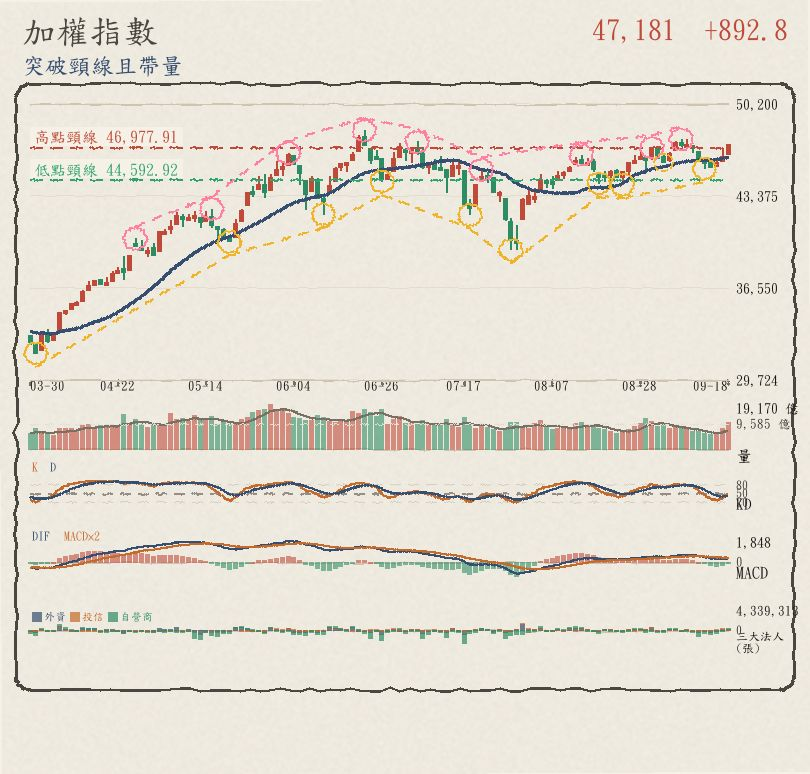
圖說：加權指數日 K（與個股圖相同標記）：黃圈＝轉折低點、粉圈＝轉折高點、虛線小圈＝還沒確認的轉折、藍線＝月線 MA20、水平虛線＝高點／低點頸線。最後一根是資料日當天。
本區塊為公開資料的技術面觀察，不構成投資建議，
不報牌、不預測、不下買賣決策。成交金額為集中市場總成交金額（含 ETF／權證），
與頁首摘要的「上市個股成交金額」口徑不同。標籤是統計，不是評分、也不是推薦。
上市 vs 上櫃（同期快篩）
加權 +1.14% vs 櫃買 -0.03%（方向相反，大小型股背離） → 方向相反（大小型股背離）
（兩個市場分開寫，不合併成一個數字；櫃買為 TPEX 公開資料）
櫃買歷史：TPEX 逐日回補 130 根；來源：櫃買中心 www/zh-tw/indexInfo/sectinx（逐日，官方；OpenAPI tpex_index 只回當月）
（TPEX OpenAPI 只回當月，故逐日回補；歷史不足就不算該條均線並標「資料不足」，不用錯數字）
近 20 個交易日大盤狀態回溯（最新在上）（點開看逐日主狀態／量比／量價象限）
用同一支程式回算最近 20 個交易日（主狀態 S1~S8 與量比 20 皆為當日收盤當時的判定，
不是事後調整）；量比 20 未公布的日子寫「—」。
好條件最多的（前 10）
不好條件最多的（前 10）
好條件（8 項）：站上月線、月線向上、底底高、頭頭高、突破頸線、相對大盤強、攻擊量（量增＋上漲）、守住今日高檔（距今日高點 1% 內）。
不好條件（8 項）：跌破前低、今日下跌、相對大盤弱、在月線之下、量增下跌（出貨）、貼近今日低點（1% 內）、跌破昨日低點、月線下彎。
兩邊都是同一組日線資料＋盤中即時價算出來的「符合項目數」，只是把方向相反的條件分開數；
條件數不是評分或推薦，不構成投資建議。
盤中爆量（估量比 ≥ 1.5）（22 上市 15／上櫃 7）
今日疲弱（跌幅前 10）（10 上市 7／上櫃 3）
逐檔（70 檔，依盤中成交金額排序）
聯發科 2454 上市
4990 +280.0（+5.94%）
高點墊高、底部不穩 盤中成交值 394.61 億・全榜第 1 名（上市第 1 名）・相對大盤 +4.89
好條件 7/8：站上月線、月線向上、頭頭高、突破頸線、相對大盤強、攻擊量（量增＋上漲）、守住今日高檔（距今日高點 1% 內）
不好條件 0/8：無
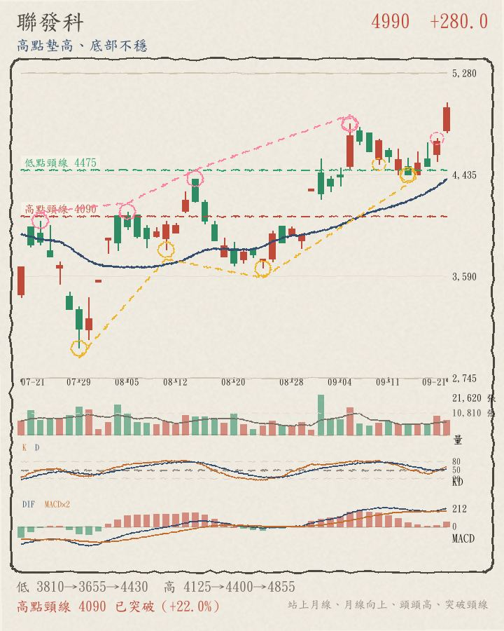
13:01 盤中 4990（+5.94%），比加權指數強 4.89 個百分點、站上月線 4334.75，已突破高點頸線 4795，高點還在墊高（但底部沒同步墊高）。
- 月線位置：現價 4990 在月線 4334.75 之上（+15.1%）；5 日線 4546 也在月線之上（短均在上）；月線向上
- 量能：以已過交易時間推估，今天成交量約是 20 日均量的 1.27 倍（量增），比 20 日均量大不少；上漲又量增，量價配合
- 關鍵價位：高點頸線 4795 已站上；前一交易日高點 4735（高於 5.4%）；今天盤中高點 5035（低於 0.9%）；今天盤中低點 4780（高於 4.4%）
- 轉折結構：高點 4125、4400、4855 墊高（頭頭高），但低點 3810、3655、4430 沒有同步墊高；還沒確認的轉折低點 09-10 4520、09-15 4430；還沒確認的轉折高點 09-07 4855、09-18 4735（圖上虛線小圈）
台積電 2330 上市
2475 +15.0（+0.61%）
底部墊高、未過前高 盤中成交值 281.98 億・全榜第 2 名（上市第 2 名）・相對大盤 -0.44
好條件 5/8：站上月線、月線向上、底底高、突破頸線、守住今日高檔（距今日高點 1% 內）
不好條件 1/8：相對大盤弱
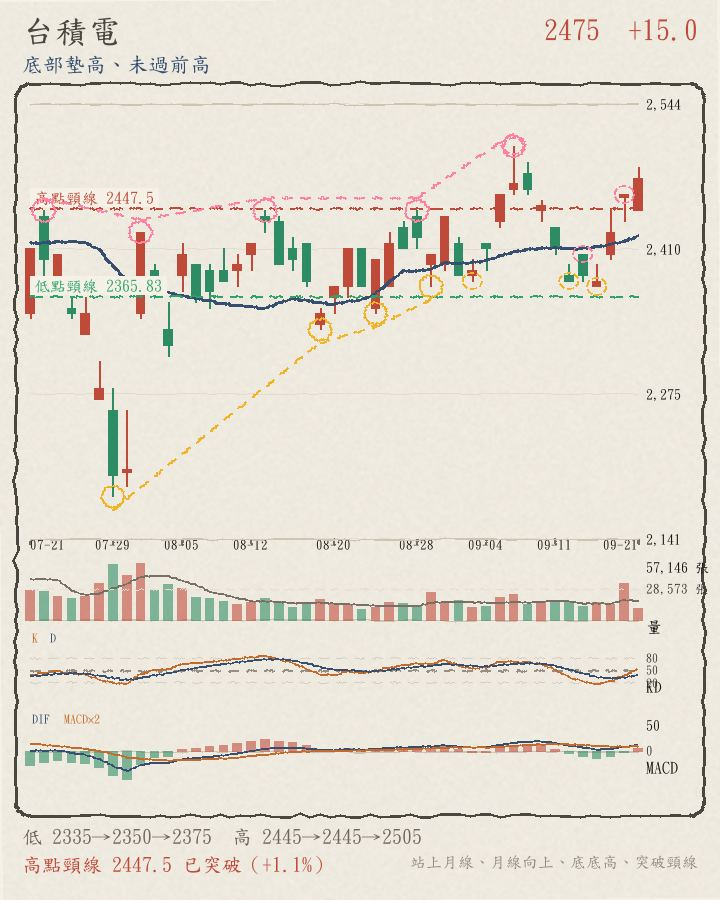
13:01 盤中 2475（+0.61%），比加權指數弱 0.44 個百分點、站上月線 2416.75，已突破高點頸線 2447.5，底部還在墊高（但高點沒同步創高）。
- 月線位置：現價 2475 在月線 2416.75 之上（+2.4%）；5 日線 2406 也在月線之下（短均在下）；月線向上
- 量能：以已過交易時間推估，今天成交量約是 20 日均量的 0.75 倍（量平），比 20 日均量少很多；上漲但量縮，量價背離
- 關鍵價位：高點頸線 2447.5 已站上；前一交易日高點 2460（高於 0.6%）；今天盤中高點 2485（低於 0.4%）；今天盤中低點 2445（高於 1.2%）
- 轉折結構：低點 2335、2350、2375 墊高（底底高），但高點 2445、2445、2505 沒有同步創高；還沒確認的轉折低點 09-14 2380、09-16 2375；還沒確認的轉折高點 09-15 2405、09-18 2460（圖上虛線小圈）
友達 2409 上市
33.35 +3.0（+9.88%）
區間或轉弱 盤中成交值 270.05 億・全榜第 3 名（上市第 3 名）・相對大盤 +8.83
好條件 5/8：站上月線、月線向上、突破頸線、相對大盤強、攻擊量（量增＋上漲）
不好條件 0/8：無
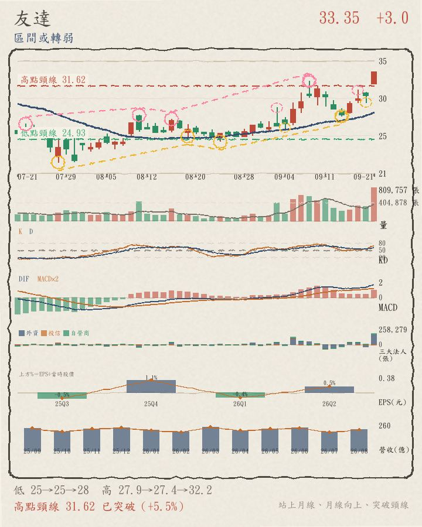
13:01 盤中 33.35（+9.88%），比加權指數強 8.83 個百分點、站上月線 27.843，已突破高點頸線 31.62，轉折還沒走出明顯方向。
- 月線位置：現價 33.35 在月線 27.843 之上（+19.8%）；5 日線 29.27 也在月線之上（短均在上）；月線向上
- 量能：以已過交易時間推估，今天成交量約是 20 日均量的 3.37 倍（爆量），比 20 日均量大不少；上漲又量增，量價配合
- 關鍵價位：高點頸線 31.62 已站上；前一交易日高點 30.8（高於 8.3%）；今天盤中高點 33.35（高於 0.0%）；今天盤中低點 31.8（高於 4.9%）
- 轉折結構：低點 25.25、24.6、27.75 與高點 27.9、27.4、32.2 都沒有明顯遞增，屬於區間震盪或轉弱；還沒確認的轉折低點 09-15 27.75、09-18 29.5；還沒確認的轉折高點 09-09 32.2、09-17 31.05（圖上虛線小圈）
台達電 2308 上市
1870 +135.0（+7.78%）
區間或轉弱 盤中成交值 265.86 億・全榜第 4 名（上市第 4 名）・相對大盤 +6.73
好條件 4/8：站上月線、相對大盤強、攻擊量（量增＋上漲）、守住今日高檔（距今日高點 1% 內）
不好條件 1/8：月線下彎
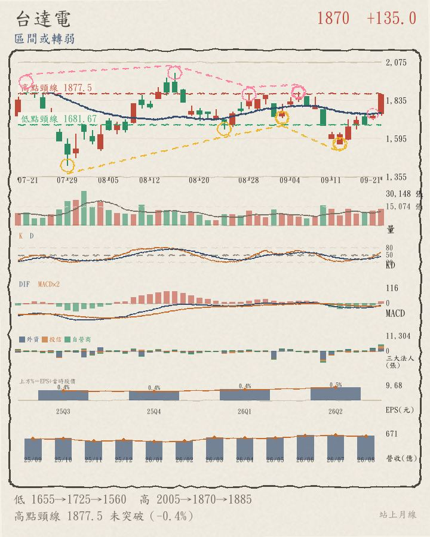
13:01 盤中 1870（+7.78%），比加權指數強 6.73 個百分點、站上月線 1749，離高點頸線 1877.5 還差 0.4%，轉折還沒走出明顯方向。
- 月線位置：現價 1870 在月線 1749 之上（+6.9%）；5 日線 1684 也在月線之下（短均在下）；月線向下
- 量能：以已過交易時間推估，今天成交量約是 20 日均量的 1.69 倍（爆量），比 20 日均量大不少；上漲又量增，量價配合
- 關鍵價位：高點頸線 1877.5 還沒突破，差 0.4%；前一交易日高點 1750（高於 6.9%）；今天盤中高點 1875（低於 0.3%）；今天盤中低點 1740（高於 7.5%）
- 轉折結構：低點 1655、1725、1560 與高點 2005、1870、1885 都沒有明顯遞增，屬於區間震盪或轉弱；還沒確認的轉折低點 09-03 1725、09-14 1560；還沒確認的轉折高點 09-07 1885、09-18 1750（圖上虛線小圈）
聯電 2303 上市
157.5 +1.5（+0.96%）
上升趨勢（底底高＋頭頭高） 盤中成交值 223.79 億・全榜第 5 名（上市第 5 名）・相對大盤 -0.09
好條件 6/8：站上月線、月線向上、底底高、頭頭高、突破頸線、守住今日高檔（距今日高點 1% 內）
不好條件 1/8：相對大盤弱
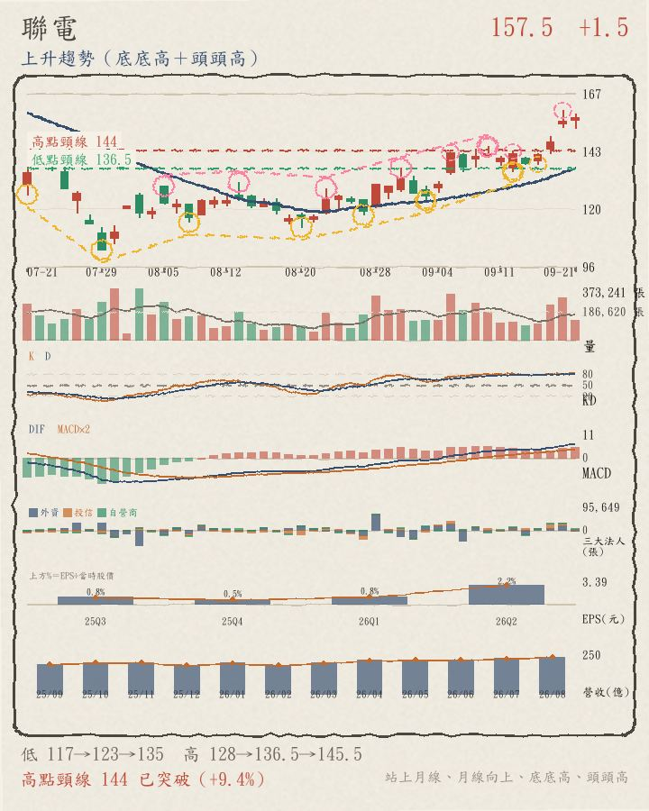
13:01 盤中 157.5（+0.96%），比加權指數弱 0.09 個百分點、站上月線 134.7，已突破高點頸線 144，轉折結構仍是底底高＋頭頭高。
- 月線位置：現價 157.5 在月線 134.7 之上（+16.9%）；5 日線 145.3 也在月線之上（短均在上）；月線向上
- 量能：以已過交易時間推估，今天成交量約是 20 日均量的 0.90 倍（量平），比 20 日均量少一些
- 關鍵價位：高點頸線 144 已站上；前一交易日高點 160.5（低於 1.9%）；今天盤中高點 159（低於 0.9%）；今天盤中低點 153（高於 2.9%）
- 轉折結構：低點 117、123、135 一路墊高、高點 128、136.5、145.5 也一路墊高，是底底高＋頭頭高；還沒確認的轉折低點 09-14 135、09-16 138；還沒確認的轉折高點 09-14 143.5、09-18 160.5（圖上虛線小圈）
創意 3443 上市
7625 +475.0（+6.64%）
上升趨勢（底底高＋頭頭高） 盤中成交值 215.56 億・全榜第 6 名（上市第 6 名）・相對大盤 +5.59
好條件 7/8：站上月線、月線向上、底底高、頭頭高、突破頸線、相對大盤強、攻擊量（量增＋上漲）
不好條件 0/8：無
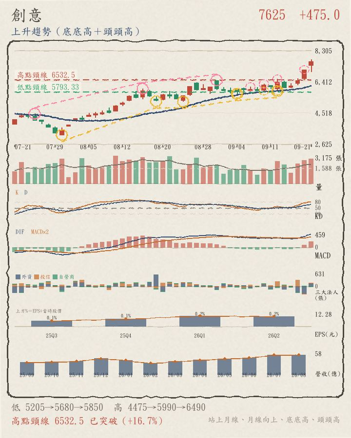
13:01 盤中 7625（+6.64%），比加權指數強 5.59 個百分點、站上月線 6050.75，已突破高點頸線 6532.5，轉折結構仍是底底高＋頭頭高。
- 月線位置：現價 7625 在月線 6050.75 之上（+26.0%）；5 日線 6451 也在月線之上（短均在上）；月線向上
- 量能：以已過交易時間推估，今天成交量約是 20 日均量的 1.71 倍（爆量），比 20 日均量大不少；上漲又量增，量價配合
- 關鍵價位：高點頸線 6532.5 已站上；前一交易日高點 7150（高於 6.6%）；今天盤中高點 7755（低於 1.7%）；今天盤中低點 7030（高於 8.5%）
- 轉折結構：低點 5205、5680、5850 一路墊高、高點 4475、5990、6490 也一路墊高，是底底高＋頭頭高；還沒確認的轉折低點 09-10 5850、09-14 5850；還沒確認的轉折高點 09-14 6575、09-18 7150（圖上虛線小圈）
景碩 3189 上市
832 +0.0（+0.00%）
高點墊高、底部不穩 盤中成交值 167.1 億・全榜第 7 名（上市第 7 名）・相對大盤 -1.05
好條件 2/8：站上月線、頭頭高
不好條件 3/8：相對大盤弱、貼近今日低點（1% 內）、月線下彎
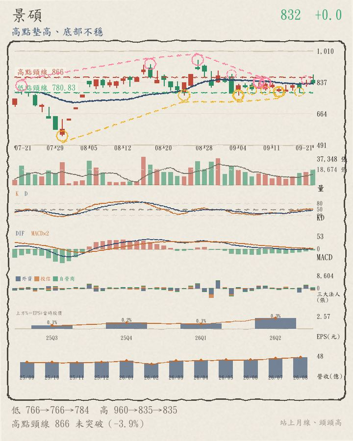
13:01 盤中 832（+0.00%），比加權指數弱 1.05 個百分點、站上月線 829.05，離高點頸線 866 還差 3.9%，高點還在墊高（但底部沒同步墊高）。
- 月線位置：現價 832 在月線 829.05 之上（+0.4%）；5 日線 810 也在月線之下（短均在下）；月線向下
- 量能：以已過交易時間推估，今天成交量約是 20 日均量的 1.30 倍（量增），比 20 日均量大不少
- 關鍵價位：高點頸線 866 還沒突破，差 3.9%；前一交易日高點 850（低於 2.1%）；今天盤中高點 878（低於 5.2%）；今天盤中低點 824（高於 1.0%）
- 轉折結構：高點 960、835、835 墊高（頭頭高），但低點 766、766、784 沒有同步墊高；還沒確認的轉折低點 09-14 784、09-17 785；還沒確認的轉折高點 09-10 835、09-18 850（圖上虛線小圈）
欣興 3037 上市
1020 +39.0（+3.98%）
區間或轉弱 盤中成交值 152.75 億・全榜第 8 名（上市第 8 名）・相對大盤 +2.93
好條件 3/8：站上月線、突破頸線、相對大盤強
不好條件 1/8：月線下彎
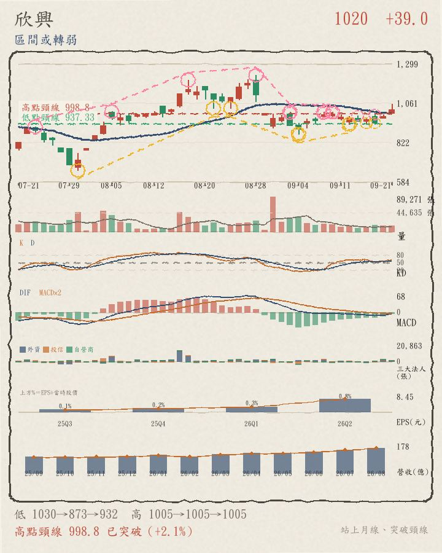
13:01 盤中 1020（+3.98%），比加權指數強 2.93 個百分點、站上月線 1002.9，已突破高點頸線 998.8，轉折還沒走出明顯方向。
- 月線位置：現價 1020 在月線 1002.9 之上（+1.7%）；5 日線 960.6 也在月線之下（短均在下）；月線向下
- 量能：以已過交易時間推估，今天成交量約是 20 日均量的 0.75 倍（量平），比 20 日均量少很多；上漲但量縮，量價背離
- 關鍵價位：高點頸線 998.8 已站上；前一交易日高點 990（高於 3.0%）；今天盤中高點 1055（低於 3.3%）；今天盤中低點 999（高於 2.1%）
- 轉折結構：低點 1030、873、932 與高點 1005、1005、1005 都沒有明顯遞增，屬於區間震盪或轉弱；還沒確認的轉折低點 09-16 940、09-17 940；還沒確認的轉折高點 09-15 986、09-17 993（圖上虛線小圈）
南亞科 2408 上市
517 -8.0（-1.52%）
區間或轉弱 盤中成交值 147.76 億・全榜第 9 名（上市第 9 名）・相對大盤 -2.57
好條件 1/8：站上月線
不好條件 4/8：今日下跌、相對大盤弱、貼近今日低點（1% 內）、月線下彎
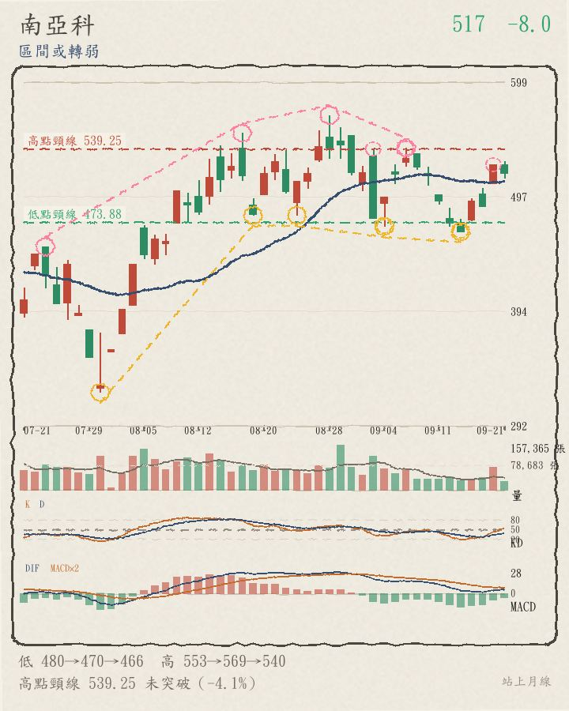
13:01 盤中 517（-1.52%），比加權指數弱 2.57 個百分點、站上月線 509.225，離高點頸線 550.25 還差 6.0%，轉折還沒走出明顯方向。
- 月線位置：現價 517 在月線 509.225 之上（+1.5%）；5 日線 488.8 也在月線之下（短均在下）；月線向下
- 量能：以已過交易時間推估，今天成交量約是 20 日均量的 0.49 倍（量縮），比 20 日均量少很多
- 關鍵價位：高點頸線 550.25 還沒突破，差 6.0%；前一交易日高點 525（低於 1.5%）；今天盤中高點 528（低於 2.1%）；今天盤中低點 513（高於 0.8%）
- 轉折結構：低點 480、470、465.5 與高點 553、569、540 都沒有明顯遞增，屬於區間震盪或轉弱；還沒確認的轉折低點 09-04 470、09-15 465.5；還沒確認的轉折高點 09-08 540、09-18 525（圖上虛線小圈）
京元電子 2449 上市
300 +8.5（+2.92%）
高點墊高、底部不穩 盤中成交值 144.59 億・全榜第 10 名（上市第 10 名）・相對大盤 +1.87
好條件 6/8：站上月線、月線向上、頭頭高、突破頸線、相對大盤強、攻擊量（量增＋上漲）
不好條件 0/8：無
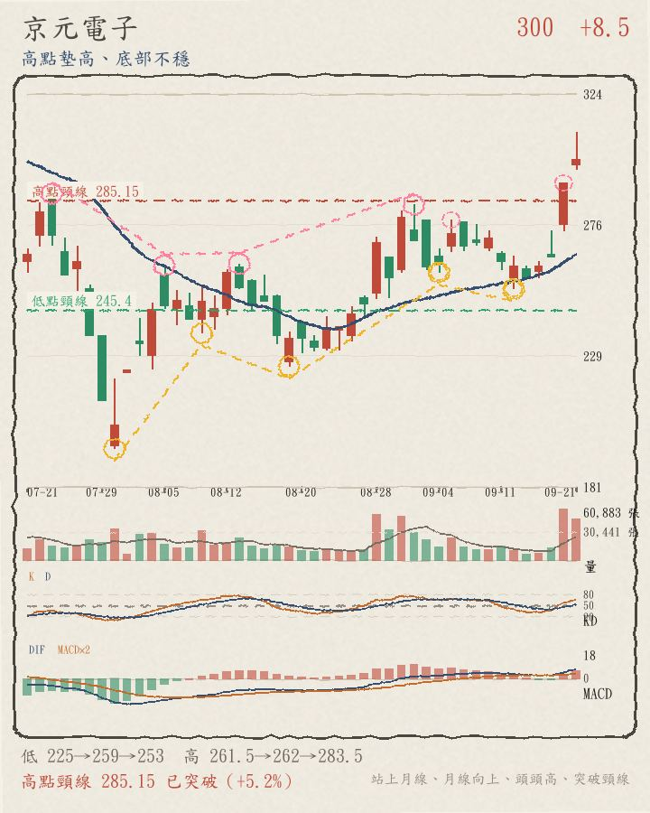
13:01 盤中 300（+2.92%），比加權指數強 1.87 個百分點、站上月線 262.6，已突破高點頸線 285.15，高點還在墊高（但底部沒同步墊高）。
- 月線位置：現價 300 在月線 262.6 之上（+14.2%）；5 日線 267.3 也在月線之上（短均在上）；月線向上
- 量能：以已過交易時間推估，今天成交量約是 20 日均量的 2.72 倍（爆量），比 20 日均量大不少；上漲又量增，量價配合
- 關鍵價位：高點頸線 285.15 已站上；前一交易日高點 291.5（高於 2.9%）；今天盤中高點 310（低於 3.2%）；今天盤中低點 296.5（高於 1.2%）
- 轉折結構：高點 261.5、262、283.5 墊高（頭頭高），但低點 225、259、253 沒有同步墊高；還沒確認的轉折低點 09-04 259、09-14 253；還沒確認的轉折高點 09-07 278、09-18 291.5（圖上虛線小圈）
台燿 6274 上櫃
1410 +40.0（+2.92%）
高點墊高、底部不穩 盤中成交值 131.67 億・全榜第 11 名（上櫃第 1 名）・相對大盤 +1.87
好條件 5/8：站上月線、頭頭高、相對大盤強、攻擊量（量增＋上漲）、守住今日高檔（距今日高點 1% 內）
不好條件 1/8：月線下彎
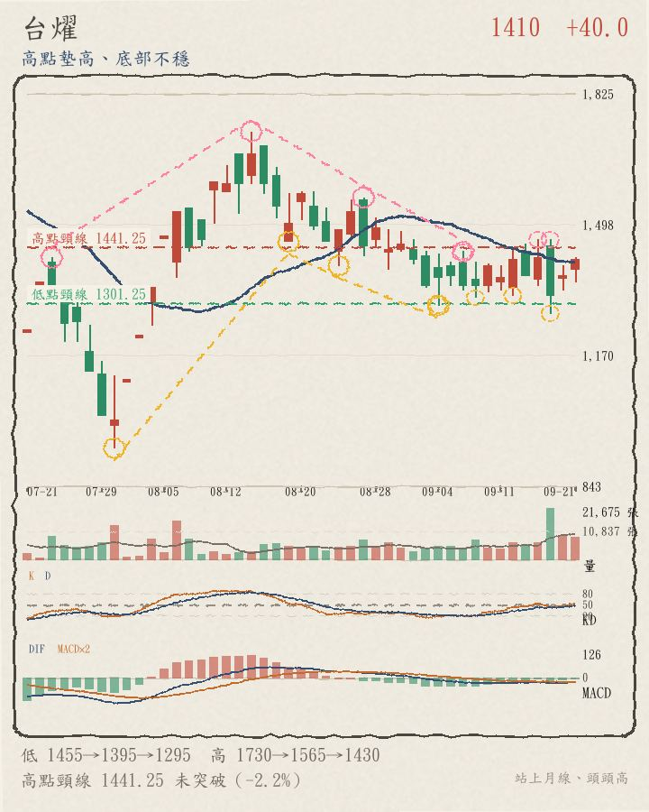
13:01 盤中 1410（+2.92%），比加權指數強 1.87 個百分點、站上月線 1405.75，離高點頸線 1441.25 還差 2.2%，高點還在墊高（但底部沒同步墊高）。
- 月線位置：現價 1410 在月線 1405.75 之上（+0.3%）；5 日線 1377 也在月線之下（短均在下）；月線向下
- 量能：以已過交易時間推估，今天成交量約是 20 日均量的 1.64 倍（爆量），比 20 日均量大不少；上漲又量增，量價配合
- 關鍵價位：高點頸線 1441.25 還沒突破，差 2.2%；前一交易日高點 1395（高於 1.1%）；今天盤中高點 1415（低於 0.4%）；今天盤中低點 1355（高於 4.1%）
- 轉折結構：高點 1730、1565、1430 墊高（頭頭高），但低點 1455、1395、1295 沒有同步墊高；還沒確認的轉折低點 09-14 1320、09-17 1275；還沒確認的轉折高點 09-16 1460、09-17 1460（圖上虛線小圈）
國巨* 2327 上市
558 +8.0（+1.45%）
區間或轉弱 盤中成交值 126.86 億・全榜第 12 名（上市第 11 名）・相對大盤 +0.40
好條件 3/8：站上月線、相對大盤強、突破頸線
不好條件 2/8：貼近今日低點（1% 內）、月線下彎
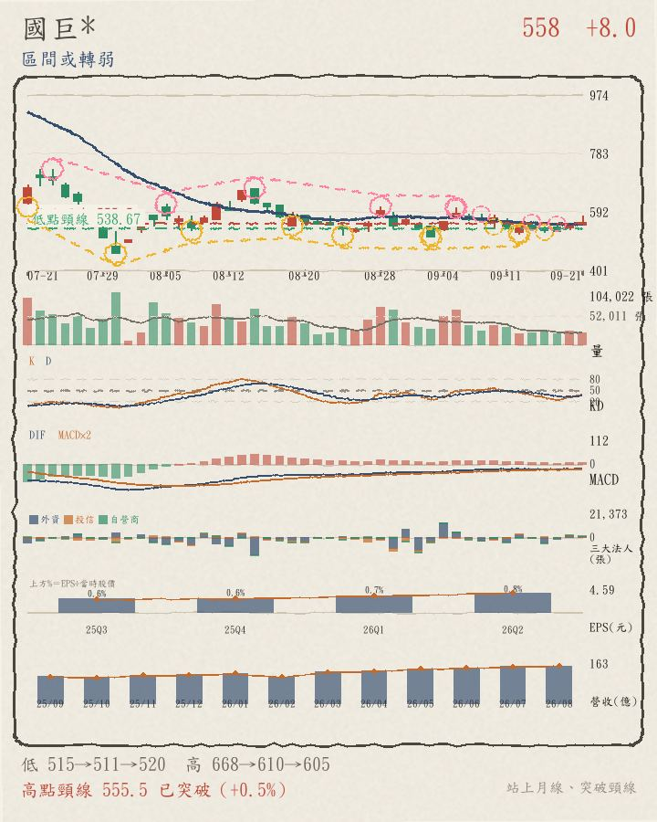
13:01 盤中 558（+1.45%），比加權指數強 0.40 個百分點、站上月線 552.2，已突破高點頸線 555.5，轉折還沒走出明顯方向。
- 月線位置：現價 558 在月線 552.2 之上（+1.1%）；5 日線 539.4 也在月線之下（短均在下）；月線向下
- 量能：以已過交易時間推估，今天成交量約是 20 日均量的 0.68 倍（量縮），比 20 日均量少很多；上漲但量縮，量價背離
- 關鍵價位：高點頸線 555.5 已站上；前一交易日高點 550（高於 1.5%）；今天盤中高點 579（低於 3.6%）；今天盤中低點 556（高於 0.4%）
- 轉折結構：低點 515、511、520 與高點 668、610、605 都沒有明顯遞增，屬於區間震盪或轉弱；還沒確認的轉折低點 09-14 520、09-16 526；還沒確認的轉折高點 09-15 558、09-17 553（圖上虛線小圈）
南電 8046 上市
1060 -40.0（-3.64%）
高點墊高、底部不穩 盤中成交值 120.79 億・全榜第 13 名（上市第 12 名）・相對大盤 -4.69
好條件 1/8：頭頭高
不好條件 6/8：今日下跌、相對大盤弱、在月線之下、貼近今日低點（1% 內）、跌破昨日低點、月線下彎
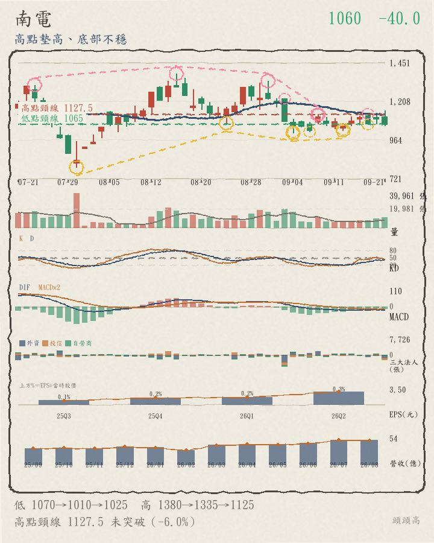
13:01 盤中 1060（-3.64%），比加權指數弱 4.69 個百分點、跌破月線 1127.25，離高點頸線 1127.5 還差 6.0%，高點還在墊高（但底部沒同步墊高）。
- 月線位置：現價 1060 在月線 1127.25 之下（-6.0%）；5 日線 1082 也在月線之下（短均在下）；月線向下
- 量能：以已過交易時間推估，今天成交量約是 20 日均量的 1.18 倍（量增），比 20 日均量大不少；下跌卻量增，量價背離
- 關鍵價位：高點頸線 1127.5 還沒突破，差 6.0%；前一交易日高點 1120（低於 5.4%）；今天盤中高點 1150（低於 7.8%）；今天盤中低點 1055（高於 0.5%）
- 轉折結構：高點 1380、1335、1125 墊高（頭頭高），但低點 1070、1010、1025 沒有同步墊高；還沒確認的轉折低點 09-14 1025、09-17 1060；還沒確認的轉折高點 09-09 1125、09-17 1130（圖上虛線小圈）
群創 3481 上市
49.85 +1.6（+3.32%）
區間或轉弱 盤中成交值 116.35 億・全榜第 14 名（上市第 13 名）・相對大盤 +2.27
好條件 4/8：站上月線、月線向上、相對大盤強、攻擊量（量增＋上漲）
不好條件 0/8：無
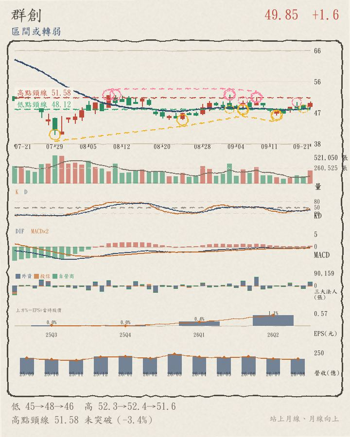
13:01 盤中 49.85（+3.32%），比加權指數強 2.27 個百分點、站上月線 48.205，離高點頸線 51.58 還差 3.4%，轉折還沒走出明顯方向。
- 月線位置：現價 49.85 在月線 48.205 之上（+3.4%）；5 日線 47.98 也在月線之下（短均在下）；月線向上
- 量能：以已過交易時間推估，今天成交量約是 20 日均量的 1.50 倍（爆量），比 20 日均量大不少；上漲又量增，量價配合
- 關鍵價位：高點頸線 51.58 還沒突破，差 3.4%；前一交易日高點 49.4（高於 0.9%）；今天盤中高點 50.4（低於 1.1%）；今天盤中低點 48.7（高於 2.4%）
- 轉折結構：低點 44.95、48、46.25 與高點 52.3、52.4、51.6 都沒有明顯遞增，屬於區間震盪或轉弱；還沒確認的轉折低點 09-14 46.25、09-18 48.25；還沒確認的轉折高點 09-09 51.6、09-17 50.2（圖上虛線小圈）
大立光 3008 上市
6365 -65.0（-1.01%）
高點墊高、底部不穩 盤中成交值 109.29 億・全榜第 15 名（上市第 14 名）・相對大盤 -2.06
好條件 2/8：月線向上、頭頭高
不好條件 4/8：今日下跌、相對大盤弱、在月線之下、貼近今日低點（1% 內）
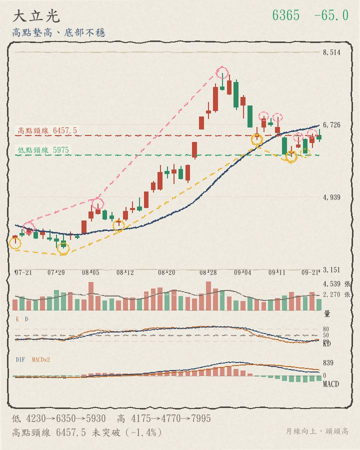
13:01 盤中 6365（-1.01%），比加權指數弱 2.06 個百分點、跌破月線 6655，離高點頸線 6457.5 還差 1.4%，高點還在墊高（但底部沒同步墊高）。
- 月線位置：現價 6365 在月線 6655 之下（-4.4%）；5 日線 6145 也在月線之下（短均在下）；月線向上
- 量能：以已過交易時間推估，今天成交量約是 20 日均量的 0.84 倍（量平），比 20 日均量少很多
- 關鍵價位：高點頸線 6457.5 還沒突破，差 1.4%；前一交易日高點 6500（低於 2.1%）；今天盤中高點 6615（低於 3.8%）；今天盤中低點 6305（高於 1.0%）
- 轉折結構：高點 4175、4770、7995 墊高（頭頭高），但低點 4230、6350、5930 沒有同步墊高；還沒確認的轉折低點 09-15 5930、09-17 6020；還沒確認的轉折高點 09-16 6415、09-18 6500（圖上虛線小圈）
華邦電 2344 上市
175 -4.5（-2.51%）
區間或轉弱 盤中成交值 103.64 億・全榜第 16 名（上市第 15 名）・相對大盤 -3.56
好條件 0/8：無
不好條件 5/8：今日下跌、相對大盤弱、在月線之下、貼近今日低點（1% 內）、月線下彎
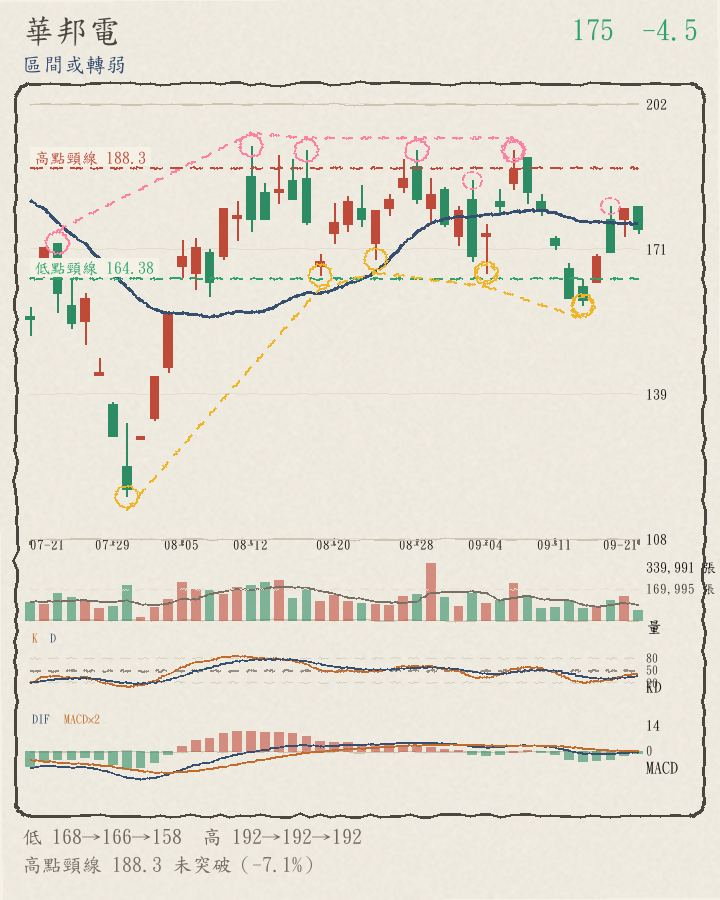
13:01 盤中 175（-2.51%），比加權指數弱 3.56 個百分點、跌破月線 176.275，離高點頸線 190.9 還差 8.3%，轉折還沒走出明顯方向。
- 月線位置：現價 175 在月線 176.275 之下（-0.7%）；5 日線 167.6 也在月線之下（短均在下）；月線向下
- 量能：以已過交易時間推估，今天成交量約是 20 日均量的 0.53 倍（量縮），比 20 日均量少很多
- 關鍵價位：高點頸線 190.9 還沒突破，差 8.3%；前一交易日高點 179.5（低於 2.5%）；今天盤中高點 180（低於 2.8%）；今天盤中低點 174（高於 0.6%）
- 轉折結構：低點 168.5、165.5、158.5 與高點 192、192、192 都沒有明顯遞增，屬於區間震盪或轉弱；還沒確認的轉折低點 09-04 165.5、09-15 158.5；還沒確認的轉折高點 09-08 192、09-17 180（圖上虛線小圈）
量縮
↑ 回上方清單
南亞 1303 上市
240 +2.0（+0.84%）
底部墊高、未過前高 盤中成交值 103.58 億・全榜第 17 名（上市第 16 名）・相對大盤 -0.21
好條件 3/8：站上月線、月線向上、底底高
不好條件 1/8：相對大盤弱
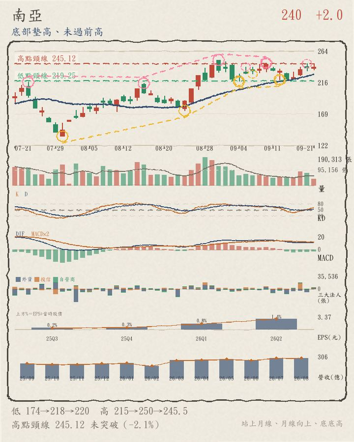
13:01 盤中 240（+0.84%），比加權指數弱 0.21 個百分點、站上月線 225.925，離高點頸線 245.12 還差 2.1%，底部還在墊高（但高點沒同步創高）。
- 月線位置：現價 240 在月線 225.925 之上（+6.2%）；5 日線 230.7 也在月線之上（短均在上）；月線向上
- 量能：以已過交易時間推估，今天成交量約是 20 日均量的 0.54 倍（量縮），比 20 日均量少很多；上漲但量縮，量價背離
- 關鍵價位：高點頸線 245.12 還沒突破，差 2.1%；前一交易日高點 245（低於 2.0%）；今天盤中高點 245（低於 2.0%）；今天盤中低點 235（高於 2.1%）
- 轉折結構：低點 174、218、220.5 墊高（底底高），但高點 215、250、245.5 沒有同步創高；還沒確認的轉折低點 09-08 229、09-14 220.5；還沒確認的轉折高點 09-10 245.5、09-18 245（圖上虛線小圈）
台光電 2383 上市
4885 -5.0（-0.10%）
區間或轉弱 盤中成交值 95.84 億・全榜第 18 名（上市第 17 名）・相對大盤 -1.15
好條件 0/8：無
不好條件 6/8：跌破前低、今日下跌、相對大盤弱、在月線之下、量增下跌（出貨）、月線下彎
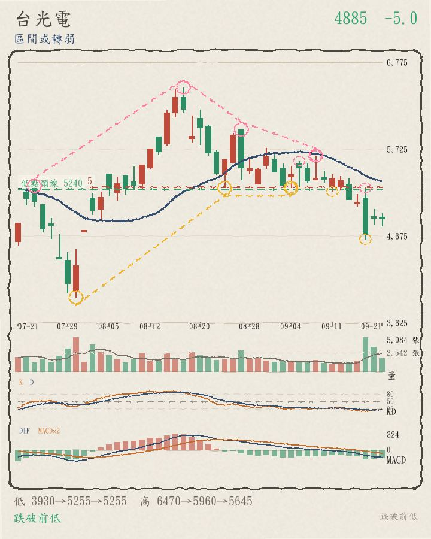
13:01 盤中 4885（-0.10%），比加權指數弱 1.15 個百分點、跌破月線 5363.25，離高點頸線 5267.5 還差 7.3%，轉折還沒走出明顯方向。
- 月線位置：現價 4885 在月線 5363.25 之下（-8.9%）；5 日線 5026 也在月線之下（短均在下）；月線向下
- 量能：以已過交易時間推估，今天成交量約是 20 日均量的 1.23 倍（量增），比 20 日均量大不少；下跌卻量增，量價背離
- 關鍵價位：已跌破前一個轉折低點；高點頸線 5267.5 還在現價上方 7.3%；前一交易日高點 5000（低於 2.3%）；今天盤中高點 4945（低於 1.2%）；今天盤中低點 4795（高於 1.9%）
- 轉折結構：低點 3930、5255、5255 與高點 6470、5960、5645 都沒有明顯遞增，屬於區間震盪或轉弱；還沒確認的轉折低點 09-11 5210、09-17 4635；還沒確認的轉折高點 09-09 5645、09-17 5255（圖上虛線小圈）
穩懋 3105 上櫃
491 -9.0（-1.80%）
高點墊高、底部不穩 盤中成交值 95.39 億・全榜第 19 名（上櫃第 2 名）・相對大盤 -2.85
好條件 4/8：站上月線、月線向上、頭頭高、突破頸線
不好條件 2/8：今日下跌、相對大盤弱
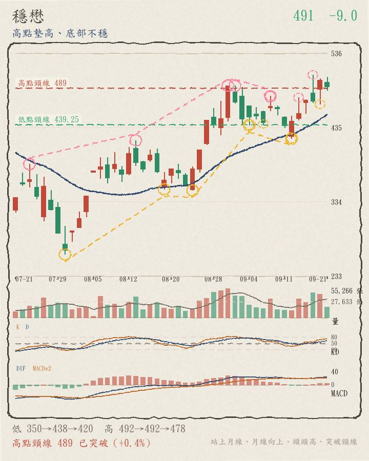
13:01 盤中 491（-1.80%），比加權指數弱 2.85 個百分點、站上月線 446.25，已突破高點頸線 484.5，高點還在墊高（但底部沒同步墊高）。
- 月線位置：現價 491 在月線 446.25 之上（+10.0%）；5 日線 468.3 也在月線之上（短均在上）；月線向上
- 量能：以已過交易時間推估，今天成交量約是 20 日均量的 0.72 倍（量平），比 20 日均量少很多
- 關鍵價位：高點頸線 484.5 已站上；前一交易日高點 502（低於 2.2%）；今天盤中高點 504（低於 2.6%）；今天盤中低點 486（高於 1.0%）
- 轉折結構：高點 492、492、478 墊高（頭頭高），但低點 349.5、438.5、420 沒有同步墊高；還沒確認的轉折低點 09-14 420、09-18 467；還沒確認的轉折高點 09-15 476、09-17 507（圖上虛線小圈）
日月光投控 3711 上市
664 +26.0（+4.08%）
底部墊高、未過前高 盤中成交值 90.91 億・全榜第 20 名（上市第 18 名）・相對大盤 +3.03
好條件 5/8：站上月線、月線向上、底底高、突破頸線、相對大盤強
不好條件 0/8：無
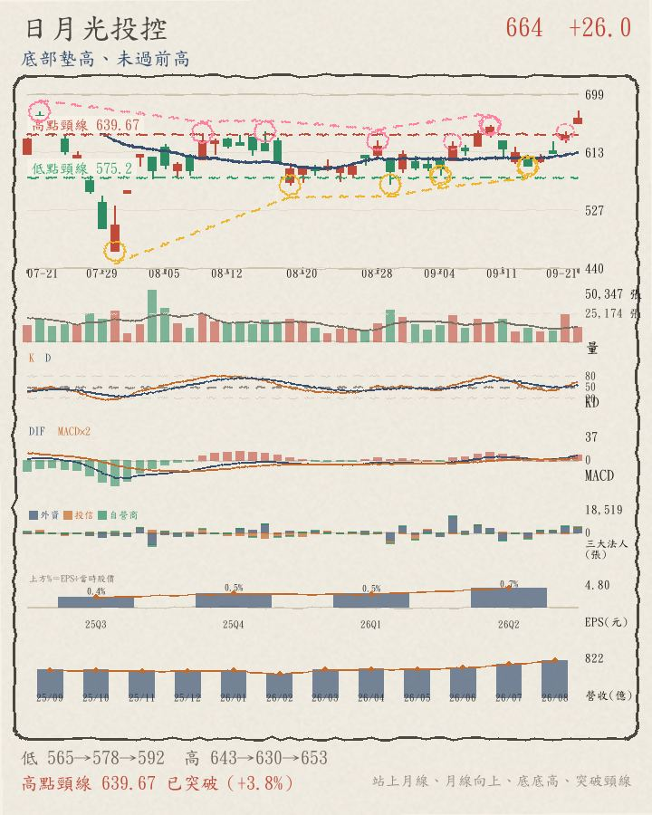
13:01 盤中 664（+4.08%），比加權指數強 3.03 個百分點、站上月線 608.45，已突破高點頸線 639.67，底部還在墊高（但高點沒同步創高）。
- 月線位置：現價 664 在月線 608.45 之上（+9.1%）；5 日線 612.2 也在月線之上（短均在上）；月線向上
- 量能：以已過交易時間推估，今天成交量約是 20 日均量的 0.99 倍（量平），跟 20 日均量差不多
- 關鍵價位：高點頸線 639.67 已站上；前一交易日高點 643（高於 3.3%）；今天盤中高點 674（低於 1.5%）；今天盤中低點 655（高於 1.4%）
- 轉折結構：低點 565、578、592 墊高（底底高），但高點 643、630、653 沒有同步創高；還沒確認的轉折低點 09-04 578、09-15 592；還沒確認的轉折高點 09-10 653、09-18 643（圖上虛線小圈）
臻鼎-KY 4958 上市
468 -5.0（-1.06%）
上升趨勢（底底高＋頭頭高） 盤中成交值 85.08 億・全榜第 21 名（上市第 19 名）・相對大盤 -2.11
好條件 3/8：月線向上、底底高、頭頭高
不好條件 5/8：今日下跌、相對大盤弱、在月線之下、貼近今日低點（1% 內）、跌破昨日低點
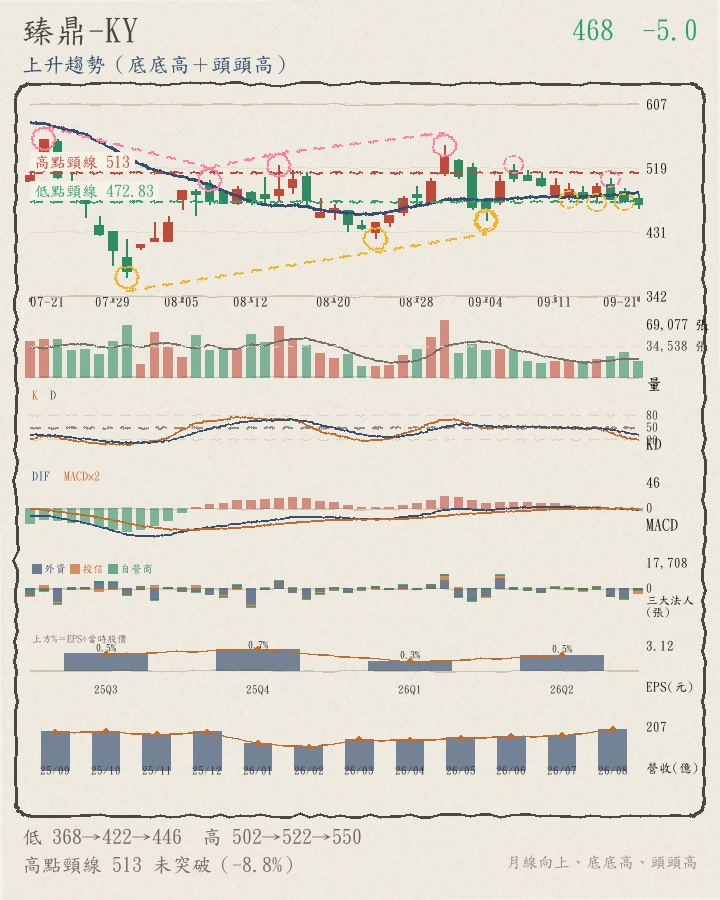
13:01 盤中 468（-1.06%），比加權指數弱 2.11 個百分點、跌破月線 483.3，離高點頸線 513 還差 8.8%，轉折結構仍是底底高＋頭頭高。
- 月線位置：現價 468 在月線 483.3 之下（-3.2%）；5 日線 481.9 也在月線之下（短均在下）；月線向上
- 量能：以已過交易時間推估，今天成交量約是 20 日均量的 0.75 倍（量平），比 20 日均量少很多
- 關鍵價位：高點頸線 513 還沒突破，差 8.8%；前一交易日高點 491（低於 4.7%）；今天盤中高點 482（低於 2.9%）；今天盤中低點 463.5（高於 1.0%）
- 轉折結構：低點 368、421.5、446.5 一路墊高、高點 502、522、550 也一路墊高，是底底高＋頭頭高；還沒確認的轉折低點 09-16 471、09-18 472；還沒確認的轉折高點 09-08 524、09-17 504（圖上虛線小圈）
宏致 3605 上市
169 +15.0（+9.74%）
上升趨勢（底底高＋頭頭高） 盤中成交值 84.46 億・全榜第 22 名（上市第 20 名）・相對大盤 +8.69
好條件 7/8：站上月線、月線向上、底底高、頭頭高、突破頸線、相對大盤強、攻擊量（量增＋上漲）
不好條件 0/8：無
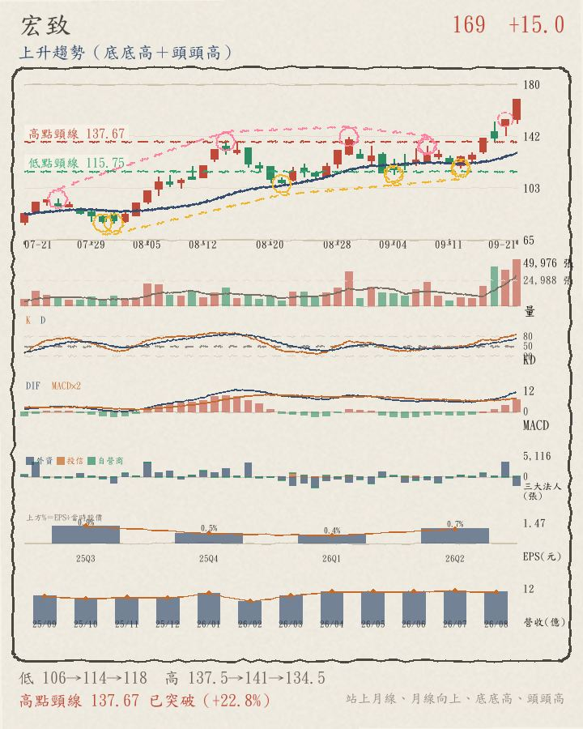
13:01 盤中 169（+9.74%），比加權指數強 8.69 個百分點、站上月線 126.55，已突破高點頸線 137.67，轉折結構仍是底底高＋頭頭高。
- 月線位置：現價 169 在月線 126.55 之上（+33.5%）；5 日線 137.6 也在月線之上（短均在上）；月線向上
- 量能：以已過交易時間推估，今天成交量約是 20 日均量的 3.61 倍（爆量），比 20 日均量大不少；上漲又量增，量價配合
- 關鍵價位：高點頸線 137.67 已站上；前一交易日高點 154（高於 9.7%）；今天盤中高點 169（高於 0.0%）；今天盤中低點 151（高於 11.9%）
- 轉折結構：低點 106.5、113.5、118 一路墊高、高點 137.5、141、134.5 也一路墊高，是底底高＋頭頭高；還沒確認的轉折低點 09-04 113.5、09-14 118；還沒確認的轉折高點 09-09 134.5、09-18 154（圖上虛線小圈）
貿聯-KY 3665 上市
2285 +75.0（+3.39%）
區間或轉弱 盤中成交值 83.22 億・全榜第 23 名（上市第 21 名）・相對大盤 +2.34
好條件 4/8：站上月線、相對大盤強、攻擊量（量增＋上漲）、突破頸線
不好條件 1/8：月線下彎
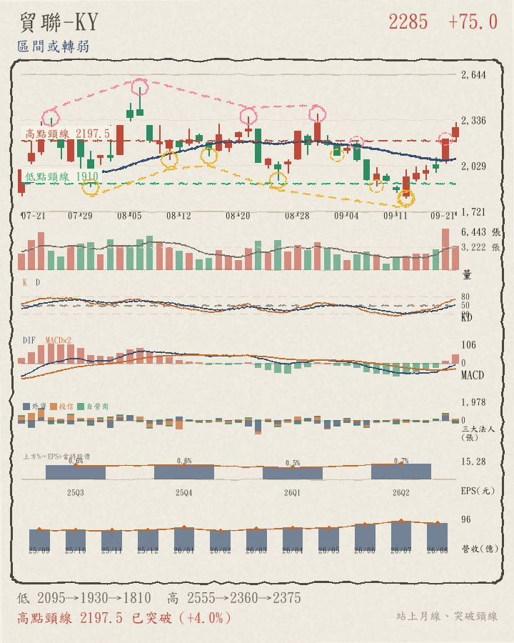
13:01 盤中 2285（+3.39%），比加權指數強 2.34 個百分點、站上月線 2064，已突破高點頸線 2197.5，轉折還沒走出明顯方向。
- 月線位置：現價 2285 在月線 2064 之上（+10.7%）；5 日線 2030 也在月線之下（短均在下）；月線向下
- 量能：以已過交易時間推估，今天成交量約是 20 日均量的 1.46 倍（量增），比 20 日均量大不少；上漲又量增，量價配合
- 關鍵價位：高點頸線 2197.5 已站上；前一交易日高點 2210（高於 3.4%）；今天盤中高點 2320（低於 1.5%）；今天盤中低點 2190（高於 4.3%）
- 轉折結構：低點 2095、1930、1810 與高點 2555、2360、2375 都沒有明顯遞增，屬於區間震盪或轉弱；還沒確認的轉折低點 09-09 1890、09-14 1810；還沒確認的轉折高點 09-07 2185、09-18 2210（圖上虛線小圈）
聯茂 6213 上市
536 +31.0（+6.14%）
區間或轉弱 盤中成交值 80.29 億・全榜第 24 名（上市第 22 名）・相對大盤 +5.09
好條件 4/8：站上月線、月線向上、相對大盤強、守住今日高檔（距今日高點 1% 內）
不好條件 0/8：無
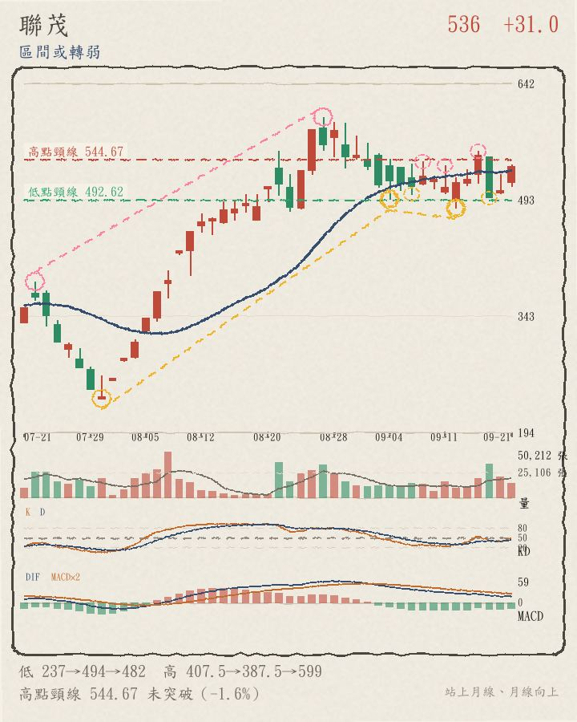
13:01 盤中 536（+6.14%），比加權指數強 5.09 個百分點、站上月線 528.075，離高點頸線 544.67 還差 1.6%，轉折還沒走出明顯方向。
- 月線位置：現價 536 在月線 528.075 之上（+1.5%）；5 日線 516.8 也在月線之下（短均在下）；月線向上
- 量能：以已過交易時間推估，今天成交量約是 20 日均量的 0.87 倍（量平），比 20 日均量少一些
- 關鍵價位：高點頸線 544.67 還沒突破，差 1.6%；前一交易日高點 525（高於 2.1%）；今天盤中高點 538（低於 0.4%）；今天盤中低點 510（高於 5.1%）
- 轉折結構：低點 237、493.5、482 與高點 407.5、387.5、599 都沒有明顯遞增，屬於區間震盪或轉弱；還沒確認的轉折低點 09-14 482、09-17 495；還沒確認的轉折高點 09-11 537、09-16 555（圖上虛線小圈）
鴻勁 7769 上市
6000 -540.0（-8.26%）
區間或轉弱 盤中成交值 79.8 億・全榜第 25 名（上市第 23 名）・相對大盤 -9.31
好條件 0/8：無
不好條件 6/8：今日下跌、相對大盤弱、在月線之下、量增下跌（出貨）、跌破昨日低點、月線下彎
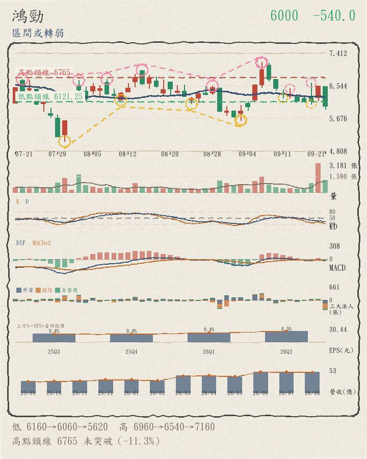
13:01 盤中 6000（-8.26%），比加權指數弱 9.31 個百分點、跌破月線 6260.25，離高點頸線 6765 還差 11.3%，轉折還沒走出明顯方向。
- 月線位置：現價 6000 在月線 6260.25 之下（-4.2%）；5 日線 6248 也在月線之下（短均在下）；月線向下
- 量能：以已過交易時間推估，今天成交量約是 20 日均量的 2.24 倍（爆量），比 20 日均量大不少；下跌卻量增，量價背離
- 關鍵價位：高點頸線 6765 還沒突破，差 11.3%；前一交易日高點 6540（低於 8.3%）；今天盤中高點 6530（低於 8.1%）；今天盤中低點 5920（高於 1.4%）
- 轉折結構：低點 6160、6060、5620 與高點 6960、6540、7160 都沒有明顯遞增，屬於區間震盪或轉弱；還沒確認的轉折低點 09-11 6210、09-17 6055；還沒確認的轉折高點 09-14 6470、09-17 6615（圖上虛線小圈）
全新 2455 上市
571 +15.0（+2.70%）
高點墊高、底部不穩 盤中成交值 79.63 億・全榜第 26 名（上市第 24 名）・相對大盤 +1.65
好條件 6/8：站上月線、月線向上、頭頭高、突破頸線、相對大盤強、攻擊量（量增＋上漲）
不好條件 0/8：無
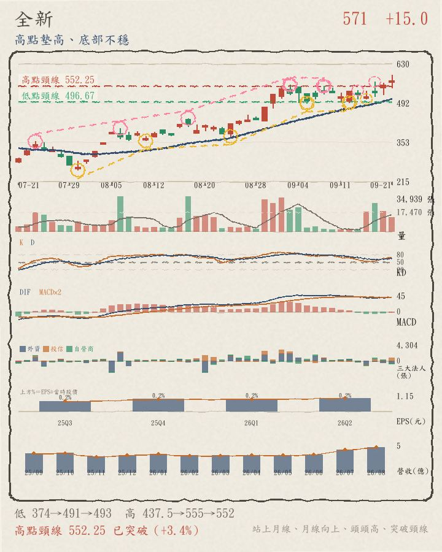
13:01 盤中 571（+2.70%），比加權指數強 1.65 個百分點、站上月線 497.35，已突破高點頸線 552.25，高點還在墊高（但底部沒同步墊高）。
- 月線位置：現價 571 在月線 497.35 之上（+14.8%）；5 日線 532 也在月線之上（短均在上）；月線向上
- 量能：以已過交易時間推估，今天成交量約是 20 日均量的 1.34 倍（量增），比 20 日均量大不少；上漲又量增，量價配合
- 關鍵價位：高點頸線 552.25 已站上；前一交易日高點 563（高於 1.4%）；今天盤中高點 590（低於 3.2%）；今天盤中低點 545（高於 4.8%）
- 轉折結構：高點 437.5、555、552 墊高（頭頭高），但低點 374.5、491、493 沒有同步墊高；還沒確認的轉折低點 09-14 493、09-16 506；還沒確認的轉折高點 09-15 536、09-17 566（圖上虛線小圈）
華星光 4979 上櫃
620 +9.0（+1.47%）
區間或轉弱 盤中成交值 78.49 億・全榜第 27 名（上櫃第 3 名）・相對大盤 +0.42
好條件 4/8：站上月線、月線向上、相對大盤強、攻擊量（量增＋上漲）
不好條件 0/8：無
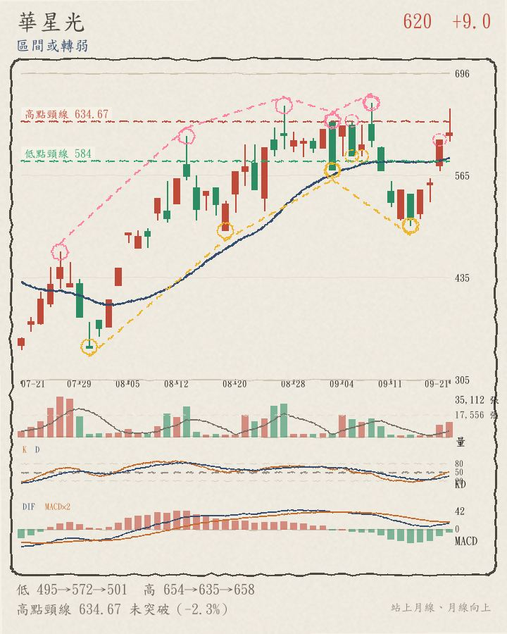
13:01 盤中 620（+1.47%），比加權指數強 0.42 個百分點、站上月線 584.2，離高點頸線 624 還差 0.6%，轉折還沒走出明顯方向。
- 月線位置：現價 620 在月線 584.2 之上（+6.1%）；5 日線 554 也在月線之下（短均在下）；月線向上
- 量能：以已過交易時間推估，今天成交量約是 20 日均量的 1.47 倍（量增），比 20 日均量大不少；上漲又量增，量價配合
- 關鍵價位：高點頸線 624 還沒突破，差 0.6%；前一交易日高點 611（高於 1.5%）；今天盤中高點 650（低於 4.6%）；今天盤中低點 609（高於 1.8%）
- 轉折結構：低點 495、572、501 與高點 654、635、658 都沒有明顯遞增，屬於區間震盪或轉弱；還沒確認的轉折低點 09-08 590、09-15 501；還沒確認的轉折高點 09-09 658、09-18 611（圖上虛線小圈）
頎邦 6147 上櫃
225 -4.0（-1.75%）
高點墊高、底部不穩 盤中成交值 77.56 億・全榜第 28 名（上櫃第 4 名）・相對大盤 -2.80
好條件 4/8：站上月線、月線向上、頭頭高、突破頸線
不好條件 2/8：今日下跌、相對大盤弱
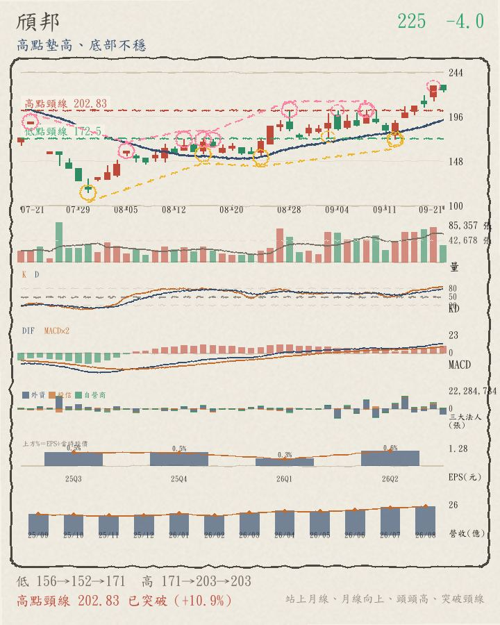
13:01 盤中 225（-1.75%），比加權指數弱 2.80 個百分點、站上月線 188.825，已突破高點頸線 202.83，高點還在墊高（但底部沒同步墊高）。
- 月線位置：現價 225 在月線 188.825 之上（+19.2%）；5 日線 207 也在月線之上（短均在上）；月線向上
- 量能：以已過交易時間推估，今天成交量約是 20 日均量的 0.90 倍（量平），比 20 日均量少一些
- 關鍵價位：高點頸線 202.83 已站上；前一交易日高點 229（低於 1.7%）；今天盤中高點 230（低於 2.2%）；今天盤中低點 222.5（高於 1.1%）
- 轉折結構：高點 171、203、203 墊高（頭頭高），但低點 155.5、152、171 沒有同步墊高；還沒確認的轉折低點 09-03 174、09-14 171；還沒確認的轉折高點 09-09 203、09-18 229（圖上虛線小圈）
群聯 8299 上櫃
2155 +15.0（+0.70%）
區間或轉弱 盤中成交值 76.65 億・全榜第 29 名（上櫃第 5 名）・相對大盤 -0.35
好條件 1/8：站上月線
不好條件 2/8：相對大盤弱、月線下彎
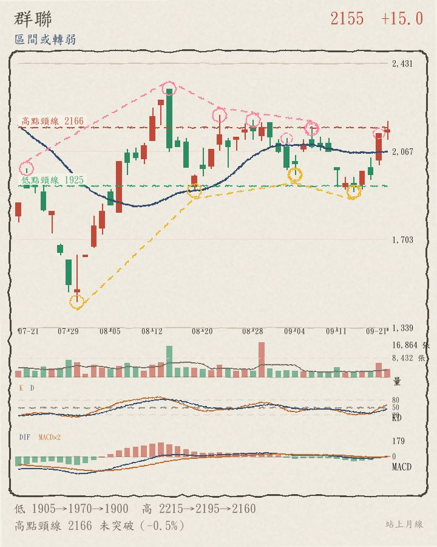
13:01 盤中 2155（+0.70%），比加權指數弱 0.35 個百分點、站上月線 2064.5，離高點頸線 2166 還差 0.5%，轉折還沒走出明顯方向。
- 月線位置：現價 2155 在月線 2064.5 之上（+4.4%）；5 日線 1990 也在月線之下（短均在下）；月線向下
- 量能：以已過交易時間推估，今天成交量約是 20 日均量的 1.06 倍（量平），比 20 日均量大一些
- 關鍵價位：高點頸線 2166 還沒突破，差 0.5%；前一交易日高點 2140（高於 0.7%）；今天盤中高點 2190（低於 1.6%）；今天盤中低點 2115（高於 1.9%）
- 轉折結構：低點 1905、1970、1900 與高點 2215、2195、2160 都沒有明顯遞增，屬於區間震盪或轉弱；還沒確認的轉折低點 09-04 1970、09-15 1900；還沒確認的轉折高點 09-08 2160、09-18 2140（圖上虛線小圈）
致茂 2360 上市
2390 +100.0（+4.37%）
上升趨勢（底底高＋頭頭高） 盤中成交值 73.06 億・全榜第 30 名（上市第 25 名）・相對大盤 +3.32
好條件 5/8：站上月線、底底高、頭頭高、相對大盤強、攻擊量（量增＋上漲）
不好條件 1/8：月線下彎
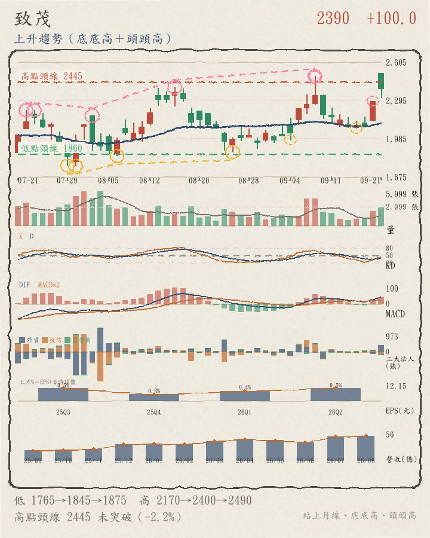
13:01 盤中 2390（+4.37%），比加權指數強 3.32 個百分點、站上月線 2094，離高點頸線 2445 還差 2.2%，轉折結構仍是底底高＋頭頭高。
- 月線位置：現價 2390 在月線 2094 之上（+14.1%）；5 日線 2137 也在月線之上（短均在上）；月線向下
- 量能：以已過交易時間推估，今天成交量約是 20 日均量的 1.77 倍（爆量），比 20 日均量大不少；上漲又量增，量價配合
- 關鍵價位：高點頸線 2445 還沒突破，差 2.2%；前一交易日高點 2290（高於 4.4%）；今天盤中高點 2515（低於 5.0%）；今天盤中低點 2315（高於 3.2%）
- 轉折結構：低點 1765、1845、1875 一路墊高、高點 2170、2400、2490 也一路墊高，是底底高＋頭頭高；還沒確認的轉折低點 09-04 1975、09-16 2070；還沒確認的轉折高點 09-09 2490、09-18 2290（圖上虛線小圈）
力成 6239 上市
292.5 +8.5（+2.99%）
區間或轉弱 盤中成交值 72.54 億・全榜第 31 名（上市第 26 名）・相對大盤 +1.94
好條件 5/8：站上月線、月線向上、突破頸線、相對大盤強、攻擊量（量增＋上漲）
不好條件 0/8：無
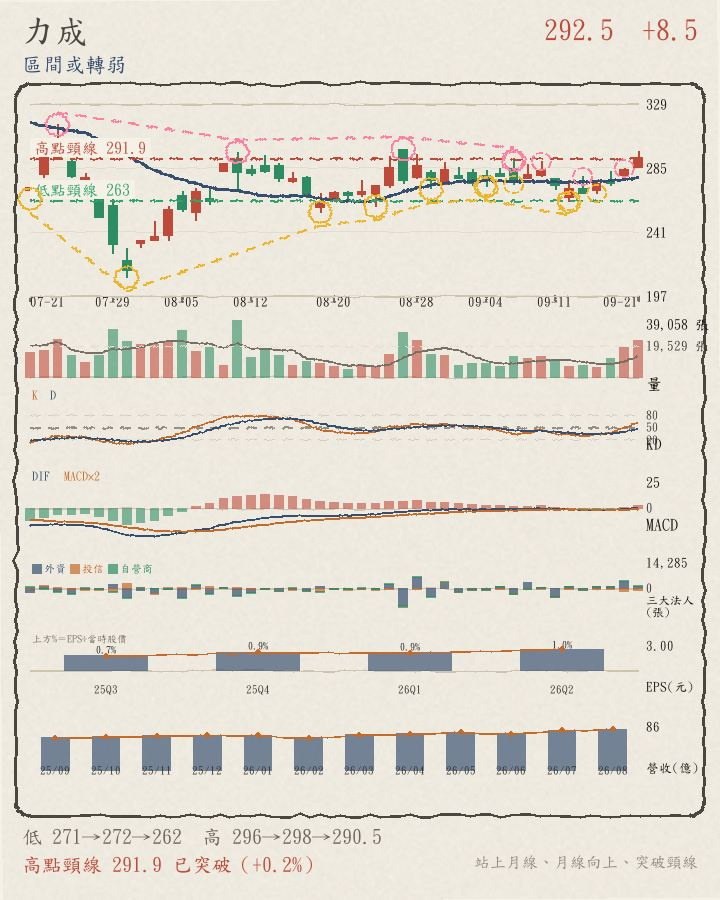
13:01 盤中 292.5（+2.99%），比加權指數強 1.94 個百分點、站上月線 277.45，已突破高點頸線 291.9，轉折還沒走出明顯方向。
- 月線位置：現價 292.5 在月線 277.45 之上（+5.4%）；5 日線 274.5 也在月線之下（短均在下）；月線向上
- 量能：以已過交易時間推估，今天成交量約是 20 日均量的 2.29 倍（爆量），比 20 日均量大不少；上漲又量增，量價配合
- 關鍵價位：高點頸線 291.9 已站上；前一交易日高點 285（高於 2.6%）；今天盤中高點 296.5（低於 1.3%）；今天盤中低點 286（高於 2.3%）
- 轉折結構：低點 271、272.5、262 與高點 296、298、290.5 都沒有明顯遞增，屬於區間震盪或轉弱；還沒確認的轉折低點 09-14 262、09-16 268；還沒確認的轉折高點 09-15 279.5、09-18 285（圖上虛線小圈）
富喬 1815 上櫃
120.5 +1.0（+0.84%）
區間或轉弱 盤中成交值 70.74 億・全榜第 32 名（上櫃第 6 名）・相對大盤 -0.21
好條件 2/8：站上月線、月線向上
不好條件 2/8：相對大盤弱、貼近今日低點（1% 內）
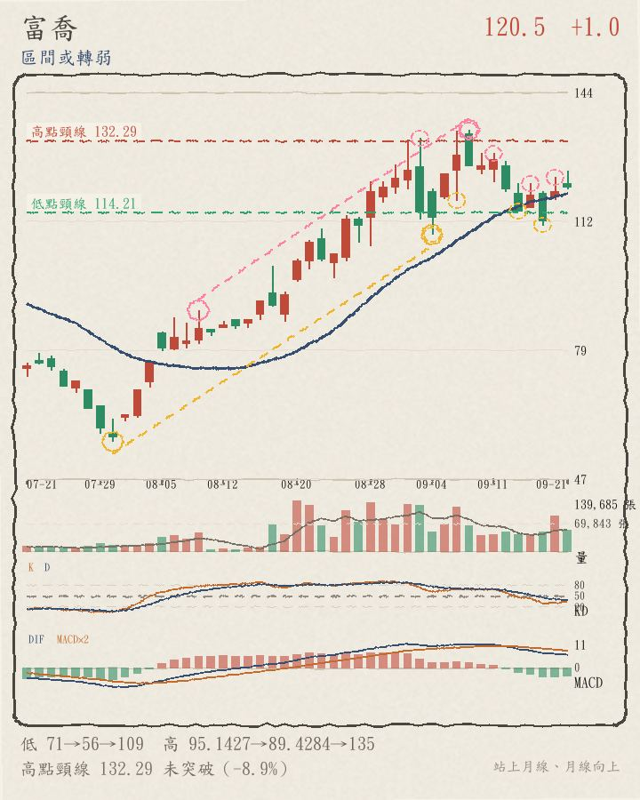
13:01 盤中 120.5（+0.84%），比加權指數弱 0.21 個百分點、站上月線 118.033，離高點頸線 122.25 還差 1.4%，轉折還沒走出明顯方向。
- 月線位置：現價 120.5 在月線 118.033 之上（+2.1%）；5 日線 116.9 也在月線之下（短均在下）；月線向上
- 量能：以已過交易時間推估，今天成交量約是 20 日均量的 0.84 倍（量平），比 20 日均量少很多；上漲但量縮，量價背離
- 關鍵價位：高點頸線 122.25 還沒突破，差 1.4%；前一交易日高點 123（低於 2.0%）；今天盤中高點 124.5（低於 3.2%）；今天盤中低點 120（高於 0.4%）
- 轉折結構：低點 70.857、56.2856、108.571 與高點 95.1427、89.4284、135 都沒有明顯遞增，屬於區間震盪或轉弱；還沒確認的轉折低點 09-15 114.5、09-17 111；還沒確認的轉折高點 09-16 121.5、09-18 123（圖上虛線小圈）
金像電 2368 上市
1045 +25.0（+2.45%）
底部墊高、未過前高 盤中成交值 67.26 億・全榜第 33 名（上市第 27 名）・相對大盤 +1.40
好條件 3/8：底底高、相對大盤強、守住今日高檔（距今日高點 1% 內）
不好條件 2/8：在月線之下、月線下彎
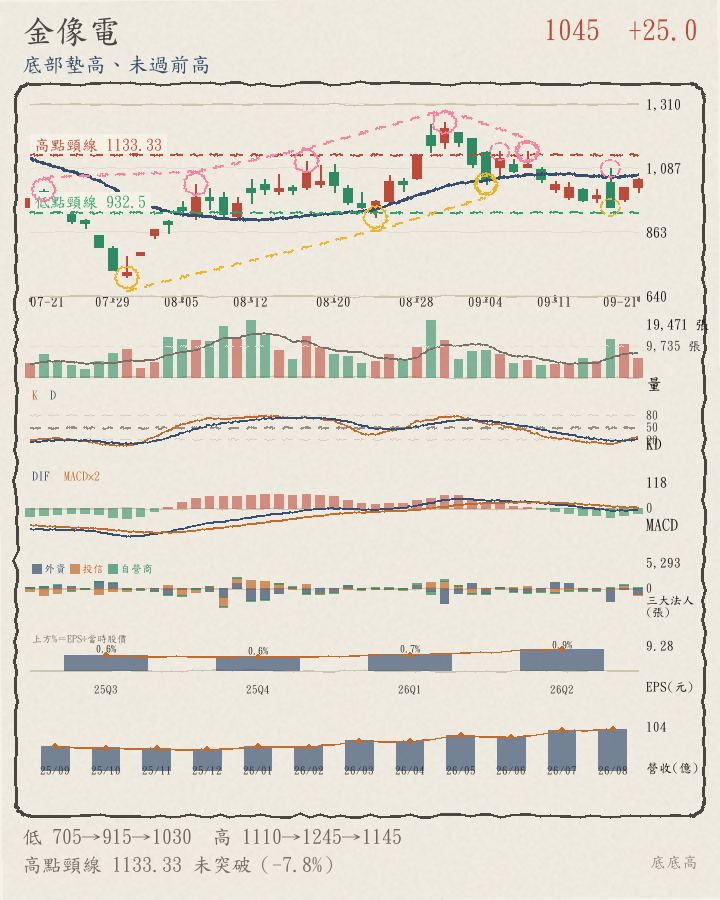
13:01 盤中 1045（+2.45%），比加權指數強 1.40 個百分點、跌破月線 1057.65，離高點頸線 1133.33 還差 7.8%，底部還在墊高（但高點沒同步創高）。
- 月線位置：現價 1045 在月線 1057.65 之下（-1.2%）；5 日線 990.8 也在月線之下（短均在下）；月線向下
- 量能：以已過交易時間推估，今天成交量約是 20 日均量的 0.95 倍（量平），跟 20 日均量差不多
- 關鍵價位：高點頸線 1133.33 還沒突破，差 7.8%；前一交易日高點 1020（高於 2.5%）；今天盤中高點 1050（低於 0.5%）；今天盤中低點 1000（高於 4.5%）
- 轉折結構：低點 705、915、1030 墊高（底底高），但高點 1110、1245、1145 沒有同步創高；還沒確認的轉折低點 09-04 1030、09-17 950；還沒確認的轉折高點 09-09 1145、09-17 1085（圖上虛線小圈）
欣銓 3264 上櫃
280.5 +12.0（+4.47%）
上升趨勢（底底高＋頭頭高） 盤中成交值 66.66 億・全榜第 34 名（上櫃第 7 名）・相對大盤 +3.42
好條件 8/8：站上月線、月線向上、底底高、頭頭高、突破頸線、相對大盤強、攻擊量（量增＋上漲）、守住今日高檔（距今日高點 1% 內）
不好條件 0/8：無
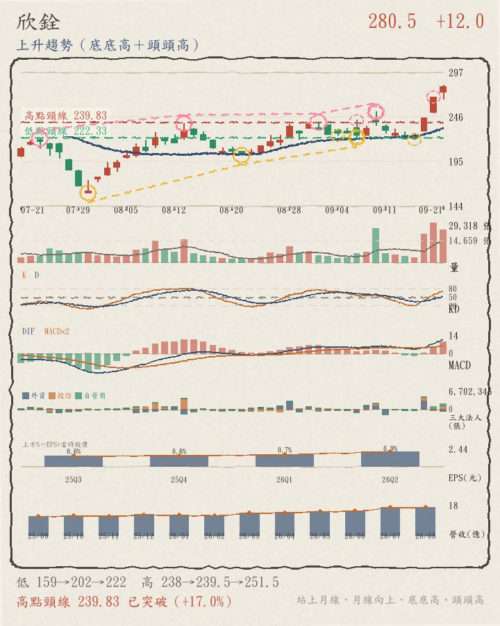
13:01 盤中 280.5（+4.47%），比加權指數強 3.42 個百分點、站上月線 229.125，已突破高點頸線 239.83，轉折結構仍是底底高＋頭頭高。
- 月線位置：現價 280.5 在月線 229.125 之上（+22.4%）；5 日線 236.9 也在月線之上（短均在上）；月線向上
- 量能：以已過交易時間推估，今天成交量約是 20 日均量的 3.76 倍（爆量），比 20 日均量大不少；上漲又量增，量價配合
- 關鍵價位：高點頸線 239.83 已站上；前一交易日高點 268.5（高於 4.5%）；今天盤中高點 282（低於 0.5%）；今天盤中低點 266（高於 5.5%）
- 轉折結構：低點 159、202、222.5 一路墊高、高點 238、239.5、251.5 也一路墊高，是底底高＋頭頭高；還沒確認的轉折低點 09-08 222.5、09-16 220；還沒確認的轉折高點 09-10 251.5、09-18 268.5（圖上虛線小圈）
聯亞 3081 上櫃
2885 +5.0（+0.17%）
上升趨勢（底底高＋頭頭高） 盤中成交值 65.37 億・全榜第 35 名（上櫃第 8 名）・相對大盤 -0.88
好條件 3/8：底底高、頭頭高、守住今日高檔（距今日高點 1% 內）
不好條件 3/8：相對大盤弱、在月線之下、月線下彎
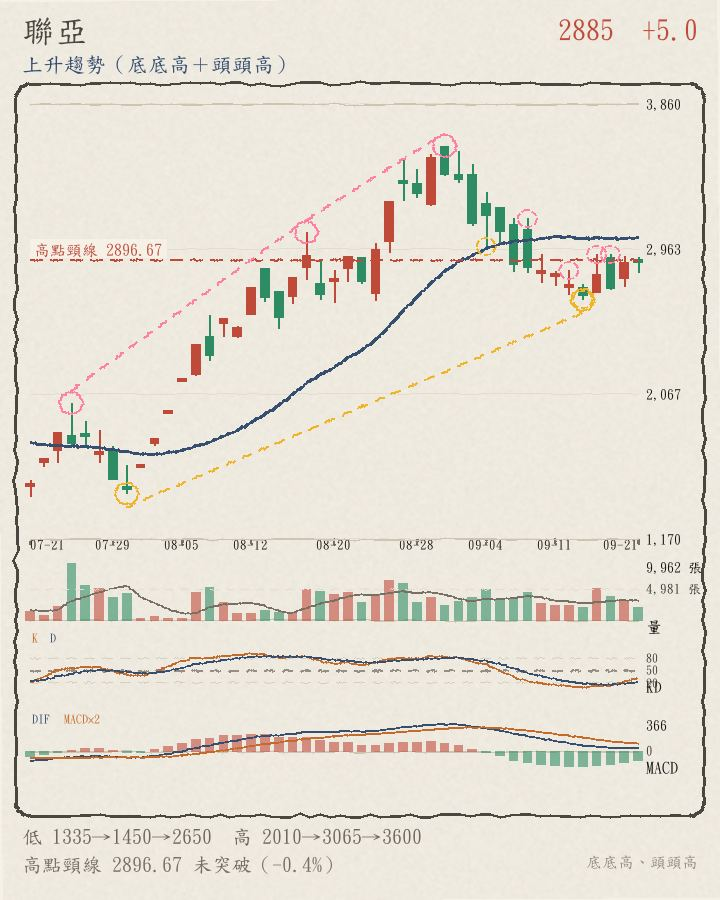
13:01 盤中 2885（+0.17%），比加權指數弱 0.88 個百分點、跌破月線 3027.25，離高點頸線 2896.67 還差 0.4%，轉折結構仍是底底高＋頭頭高。
- 月線位置：現價 2885 在月線 3027.25 之下（-4.7%）；5 日線 2765 也在月線之下（短均在下）；月線向下
- 量能：以已過交易時間推估，今天成交量約是 20 日均量的 0.64 倍（量縮），比 20 日均量少很多；上漲但量縮，量價背離
- 關鍵價位：高點頸線 2896.67 還沒突破，差 0.4%；前一交易日高點 2915（低於 1.0%）；今天盤中高點 2910（低於 0.9%）；今天盤中低點 2820（高於 2.3%）
- 轉折結構：低點 1335、1450、2650 一路墊高、高點 2010、3065、3600 也一路墊高，是底底高＋頭頭高；還沒確認的轉折低點 09-04 2980、09-15 2650；還沒確認的轉折高點 09-16 2930、09-17 2930（圖上虛線小圈）
南茂 8150 上市
103 +9.0（+9.57%）
區間或轉弱 盤中成交值 63.36 億・全榜第 36 名（上市第 28 名）・相對大盤 +8.52
好條件 4/8：站上月線、突破頸線、相對大盤強、攻擊量（量增＋上漲）
不好條件 1/8：月線下彎
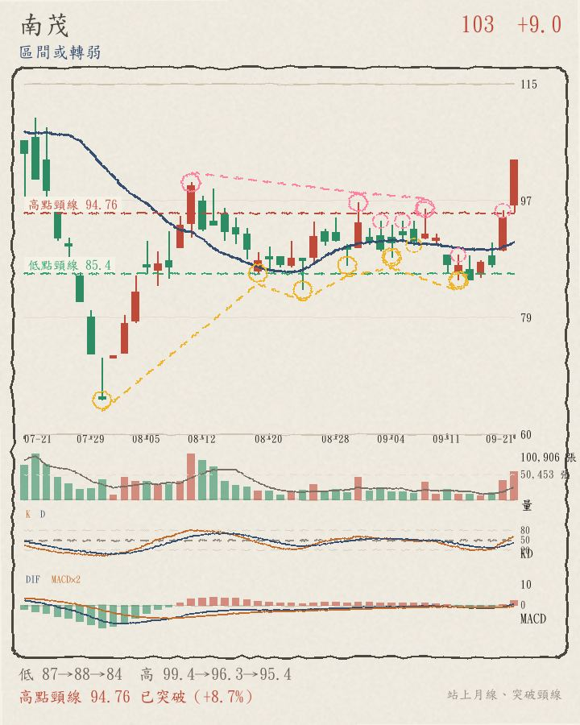
13:01 盤中 103（+9.57%），比加權指數強 8.52 個百分點、站上月線 89.415，已突破高點頸線 94.76，轉折還沒走出明顯方向。
- 月線位置：現價 103 在月線 89.415 之上（+15.2%）；5 日線 87.76 也在月線之下（短均在下）；月線向下
- 量能：以已過交易時間推估，今天成交量約是 20 日均量的 3.57 倍（爆量），比 20 日均量大不少；上漲又量增，量價配合
- 關鍵價位：高點頸線 94.76 已站上；前一交易日高點 95.1（高於 8.3%）；今天盤中高點 103（高於 0.0%）；今天盤中低點 94.8（高於 8.6%）
- 轉折結構：低點 86.6、87.9、84.3 與高點 99.4、96.3、95.4 都沒有明顯遞增，屬於區間震盪或轉弱；還沒確認的轉折低點 09-08 89.7、09-14 84.3；還沒確認的轉折高點 09-14 88.2、09-18 95.1（圖上虛線小圈）
玉晶光 3406 上市
955 -17.0（-1.75%）
高點墊高、底部不穩 盤中成交值 60.65 億・全榜第 37 名（上市第 29 名）・相對大盤 -2.80
好條件 3/8：站上月線、月線向上、頭頭高
不好條件 2/8：今日下跌、相對大盤弱
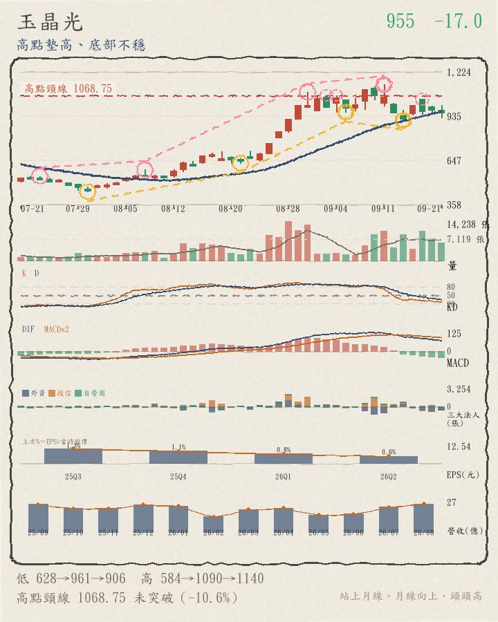
13:01 盤中 955（-1.75%），比加權指數弱 2.80 個百分點、站上月線 950.55，離高點頸線 1068.75 還差 10.6%，高點還在墊高（但底部沒同步墊高）。
- 月線位置：現價 955 在月線 950.55 之上（+0.5%）；5 日線 962.2 也在月線之上（短均在上）；月線向上
- 量能：以已過交易時間推估，今天成交量約是 20 日均量的 1.10 倍（量增），比 20 日均量大一些；下跌卻量增，量價背離
- 關鍵價位：高點頸線 1068.75 還沒突破，差 10.6%；前一交易日高點 999（低於 4.4%）；今天盤中高點 1005（低於 5.0%）；今天盤中低點 925（高於 3.2%）
- 轉折結構：高點 584、1090、1140 墊高（頭頭高），但低點 628、961、906 沒有同步墊高；還沒確認的轉折低點 09-07 961、09-15 906；還沒確認的轉折高點 09-11 1140、09-17 1045（圖上虛線小圈）
矽格 6257 上市
249 +4.5（+1.84%）
高點墊高、底部不穩 盤中成交值 60.23 億・全榜第 38 名（上市第 30 名）・相對大盤 +0.79
好條件 6/8：站上月線、月線向上、頭頭高、突破頸線、相對大盤強、攻擊量（量增＋上漲）
不好條件 0/8：無
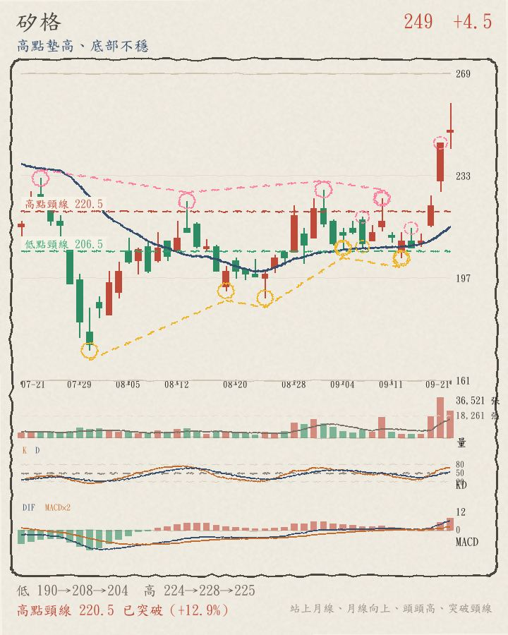
13:01 盤中 249（+1.84%），比加權指數強 0.79 個百分點、站上月線 212.4，已突破高點頸線 223.88，高點還在墊高（但底部沒同步墊高）。
- 月線位置：現價 249 在月線 212.4 之上（+17.2%）；5 日線 218.9 也在月線之上（短均在上）；月線向上
- 量能：以已過交易時間推估，今天成交量約是 20 日均量的 3.47 倍（爆量），比 20 日均量大不少；上漲又量增，量價配合
- 關鍵價位：高點頸線 223.88 已站上；前一交易日高點 244.5（高於 1.8%）；今天盤中高點 258.5（低於 3.7%）；今天盤中低點 242.5（高於 2.7%）
- 轉折結構：高點 224、228、225 墊高（頭頭高），但低點 190、207.5、204 沒有同步墊高；還沒確認的轉折低點 09-08 208、09-14 204；還沒確認的轉折高點 09-15 214.5、09-18 244.5（圖上虛線小圈）
川湖 2059 上市
12800 +305.0（+2.44%）
區間或轉弱 盤中成交值 59.01 億・全榜第 39 名（上市第 31 名）・相對大盤 +1.39
好條件 3/8：突破頸線、相對大盤強、攻擊量（量增＋上漲）
不好條件 2/8：在月線之下、月線下彎
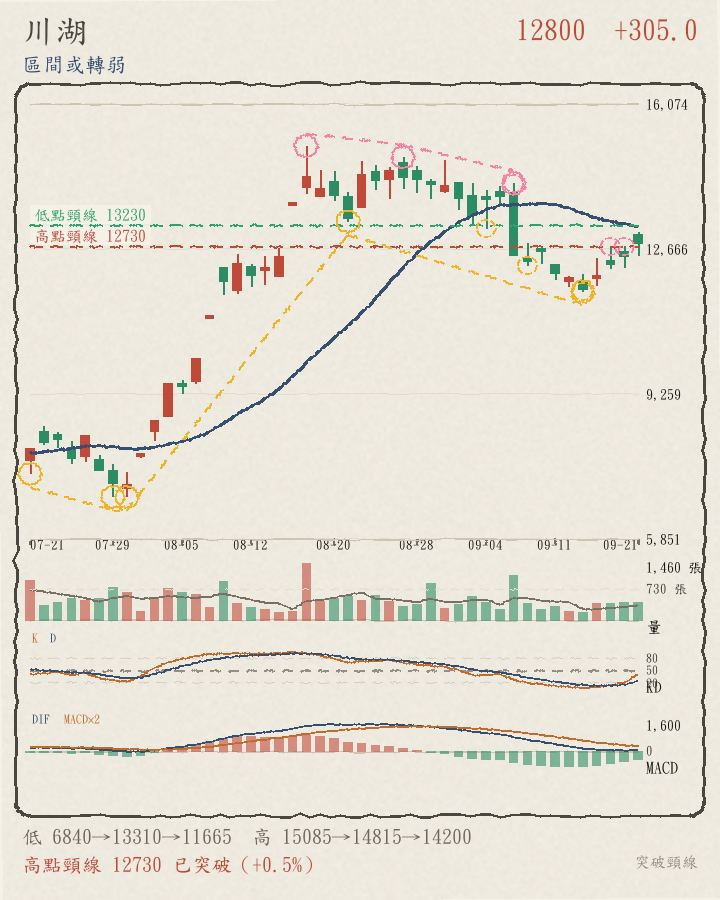
13:01 盤中 12800（+2.44%），比加權指數強 1.39 個百分點、跌破月線 13269.8，已突破高點頸線 12730，轉折還沒走出明顯方向。
- 月線位置：現價 12800 在月線 13269.8 之下（-3.5%）；5 日線 12108 也在月線之下（短均在下）；月線向下
- 量能：以已過交易時間推估，今天成交量約是 20 日均量的 1.11 倍（量增），比 20 日均量大一些；上漲又量增，量價配合
- 關鍵價位：高點頸線 12730 已站上；前一交易日高點 12730（高於 0.5%）；今天盤中高點 13050（低於 1.9%）；今天盤中低點 12510（高於 2.3%）
- 轉折結構：低點 6840、13310、11665 與高點 15085、14815、14200 都沒有明顯遞增，屬於區間震盪或轉弱；還沒確認的轉折低點 09-09 12285、09-15 11665；還沒確認的轉折高點 09-17 12730、09-18 12730（圖上虛線小圈）
華新科 2492 上市
309.5 +0.0（+0.00%）
底部墊高、未過前高 盤中成交值 57.78 億・全榜第 40 名（上市第 32 名）・相對大盤 -1.05
好條件 3/8：站上月線、月線向上、底底高
不好條件 2/8：相對大盤弱、貼近今日低點（1% 內）
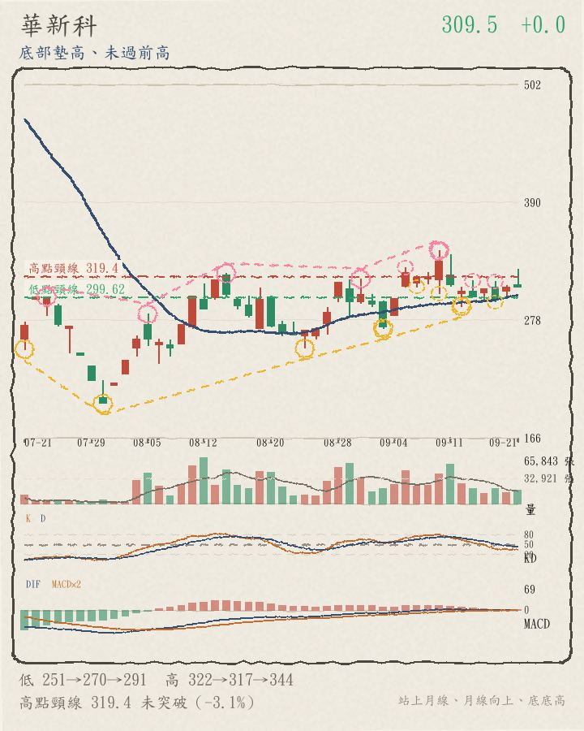
13:01 盤中 309.5（+0.00%），比加權指數弱 1.05 個百分點、站上月線 299.375，離高點頸線 319.4 還差 3.1%，底部還在墊高（但高點沒同步創高）。
- 月線位置：現價 309.5 在月線 299.375 之上（+3.4%）；5 日線 303.9 也在月線之上（短均在上）；月線向上
- 量能：以已過交易時間推估，今天成交量約是 20 日均量的 0.72 倍（量平），比 20 日均量少很多
- 關鍵價位：高點頸線 319.4 還沒突破，差 3.1%；前一交易日高點 311（低於 0.5%）；今天盤中高點 326（低於 5.1%）；今天盤中低點 309（高於 0.2%）
- 轉折結構：低點 251、270、291 墊高（底底高），但高點 322、317、344 沒有同步創高；還沒確認的轉折低點 09-14 291、09-17 295；還沒確認的轉折高點 09-15 315.5、09-17 314.5（圖上虛線小圈）
力積電 6770 上市
72.8 -1.2（-1.62%）
高點墊高、底部不穩 盤中成交值 54.27 億・全榜第 41 名（上市第 33 名）・相對大盤 -2.67
好條件 3/8：站上月線、月線向上、頭頭高
不好條件 3/8：今日下跌、相對大盤弱、貼近今日低點（1% 內）
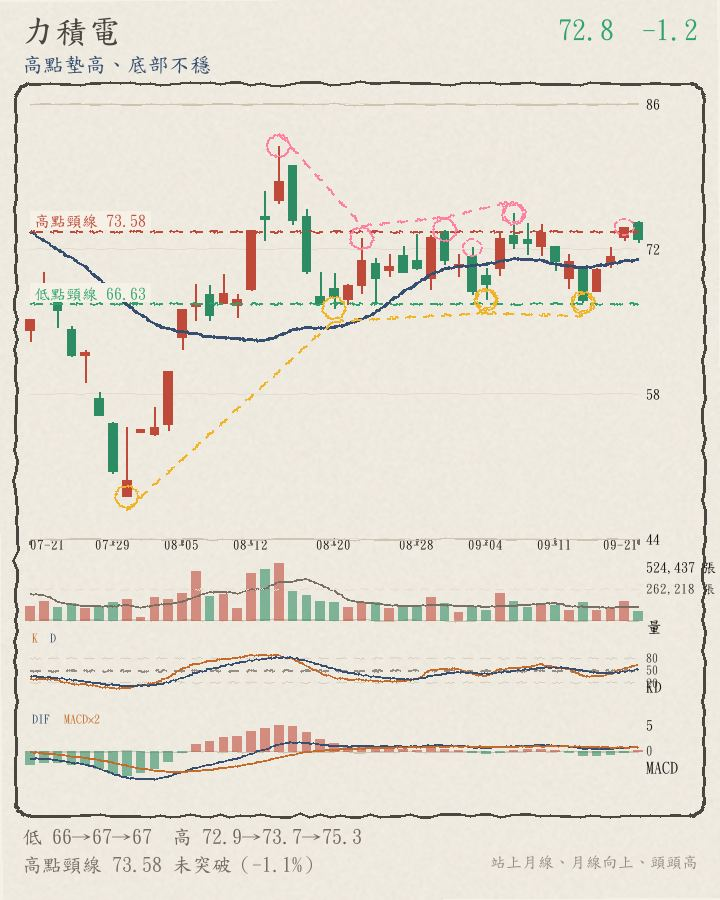
13:01 盤中 72.8（-1.62%），比加權指數弱 2.67 個百分點、站上月線 70.735，離高點頸線 73.58 還差 1.1%，高點還在墊高（但底部沒同步墊高）。
- 月線位置：現價 72.8 在月線 70.735 之上（+2.9%）；5 日線 70.54 也在月線之下（短均在下）；月線向上
- 量能：以已過交易時間推估，今天成交量約是 20 日均量的 0.63 倍（量縮），比 20 日均量少很多
- 關鍵價位：高點頸線 73.58 還沒突破，差 1.1%；前一交易日高點 74（低於 1.6%）；今天盤中高點 74.5（低於 2.3%）；今天盤中低點 72.5（高於 0.4%）
- 轉折結構：高點 72.9、73.7、75.3 墊高（頭頭高），但低點 66.2、67、66.7 沒有同步墊高；還沒確認的轉折低點 09-04 67、09-15 66.7；還沒確認的轉折高點 09-08 75.3、09-18 74（圖上虛線小圈）
雙鴻 3324 上櫃
1515 +35.0（+2.36%）
高點墊高、底部不穩 盤中成交值 53.95 億・全榜第 42 名（上櫃第 9 名）・相對大盤 +1.31
好條件 5/8：站上月線、月線向上、頭頭高、突破頸線、相對大盤強
不好條件 0/8：無
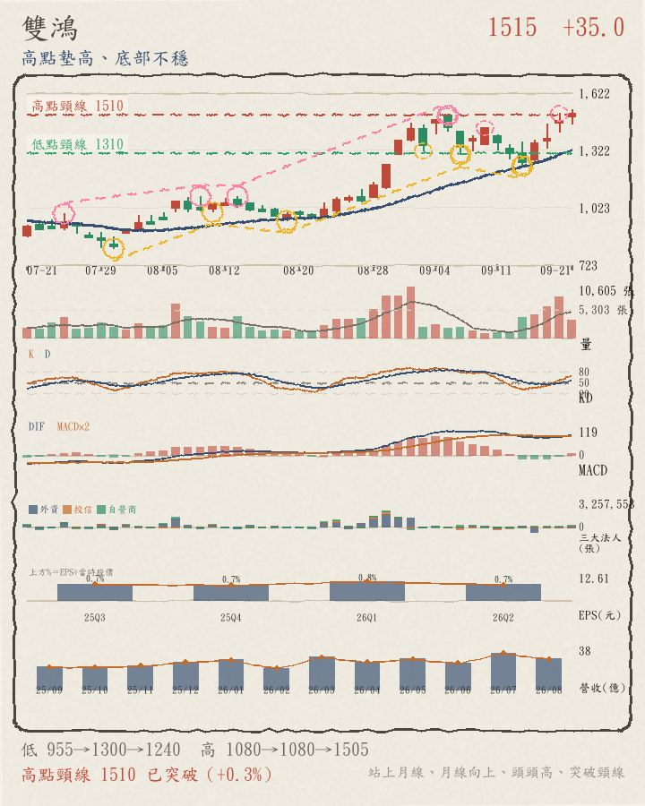
13:01 盤中 1515（+2.36%），比加權指數強 1.31 個百分點、站上月線 1300.25，已突破高點頸線 1510，高點還在墊高（但底部沒同步墊高）。
- 月線位置：現價 1515 在月線 1300.25 之上（+16.5%）；5 日線 1358 也在月線之上（短均在上）；月線向上
- 量能：以已過交易時間推估，今天成交量約是 20 日均量的 1.04 倍（量平），跟 20 日均量差不多
- 關鍵價位：高點頸線 1510 已站上；前一交易日高點 1515（高於 0.0%）；今天盤中高點 1535（低於 1.3%）；今天盤中低點 1460（高於 3.8%）
- 轉折結構：高點 1080、1080、1505 墊高（頭頭高），但低點 955、1300、1240 沒有同步墊高；還沒確認的轉折低點 09-08 1300、09-15 1240；還沒確認的轉折高點 09-10 1440、09-18 1515（圖上虛線小圈）
禾伸堂 3026 上市
782 -15.0（-1.88%）
上升趨勢（底底高＋頭頭高） 盤中成交值 53.51 億・全榜第 43 名（上市第 34 名）・相對大盤 -2.93
好條件 4/8：站上月線、月線向上、底底高、頭頭高
不好條件 2/8：今日下跌、相對大盤弱
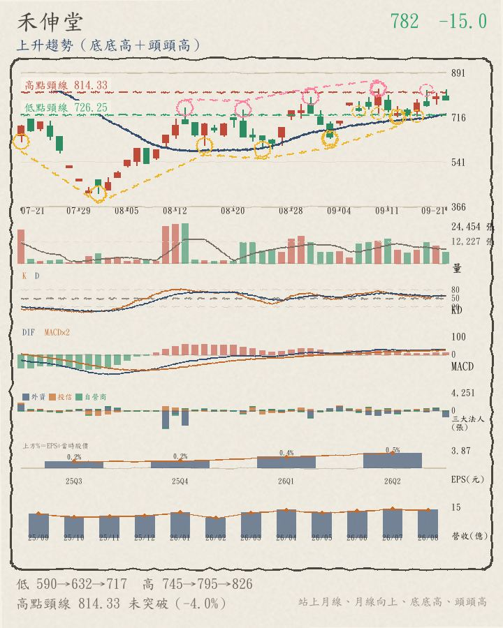
13:01 盤中 782（-1.88%），比加權指數弱 2.93 個百分點、站上月線 720.45，離高點頸線 814.33 還差 4.0%，轉折結構仍是底底高＋頭頭高。
- 月線位置：現價 782 在月線 720.45 之上（+8.5%）；5 日線 757.2 也在月線之上（短均在上）；月線向上
- 量能：以已過交易時間推估，今天成交量約是 20 日均量的 0.76 倍（量平），比 20 日均量少很多
- 關鍵價位：高點頸線 814.33 還沒突破，差 4.0%；前一交易日高點 811（低於 3.6%）；今天盤中高點 825（低於 5.2%）；今天盤中低點 782（高於 0.0%）
- 轉折結構：低點 590、632、717 一路墊高、高點 745、795、826 也一路墊高，是底底高＋頭頭高；還沒確認的轉折低點 09-14 717、09-16 720；還沒確認的轉折高點 09-10 826、09-17 822（圖上虛線小圈）
富世達 6805 上市
2420 +125.0（+5.45%）
區間或轉弱 盤中成交值 52.25 億・全榜第 44 名（上市第 35 名）・相對大盤 +4.40
好條件 5/8：站上月線、月線向上、突破頸線、相對大盤強、攻擊量（量增＋上漲）
不好條件 0/8：無
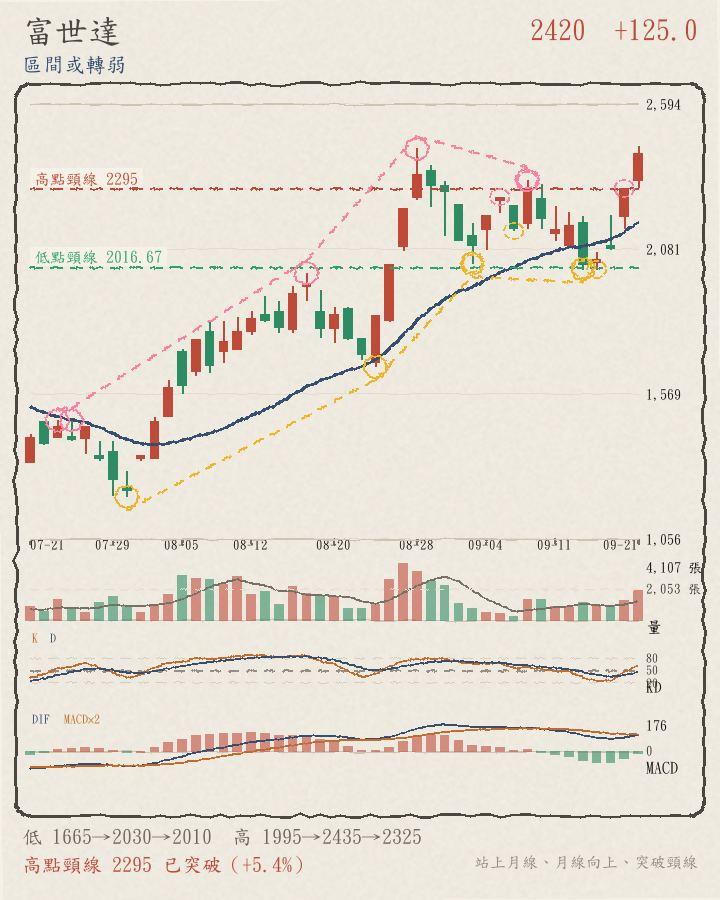
13:01 盤中 2420（+5.45%），比加權指數強 4.40 個百分點、站上月線 2141，已突破高點頸線 2295，轉折還沒走出明顯方向。
- 月線位置：現價 2420 在月線 2141 之上（+13.0%）；5 日線 2124 也在月線之下（短均在下）；月線向上
- 量能：以已過交易時間推估，今天成交量約是 20 日均量的 1.61 倍（爆量），比 20 日均量大不少；上漲又量增，量價配合
- 關鍵價位：高點頸線 2295 已站上；前一交易日高點 2295（高於 5.4%）；今天盤中高點 2445（低於 1.0%）；今天盤中低點 2300（高於 5.2%）
- 轉折結構：低點 1665、2030、2010 與高點 1995、2435、2325 都沒有明顯遞增，屬於區間震盪或轉弱；還沒確認的轉折低點 09-15 2010、09-16 2010；還沒確認的轉折高點 09-09 2325、09-18 2295（圖上虛線小圈）
穎崴 6515 上市
5835 -600.0（-9.32%）
高點墊高、底部不穩 盤中成交值 50.88 億・全榜第 45 名（上市第 36 名）・相對大盤 -10.37
好條件 1/8：頭頭高
不好條件 8/8：跌破前低、今日下跌、相對大盤弱、在月線之下、量增下跌（出貨）、貼近今日低點（1% 內）、跌破昨日低點、月線下彎
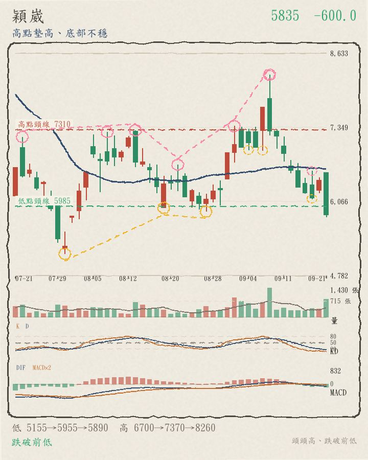
13:01 盤中 5835（-9.32%），比加權指數弱 10.37 個百分點、跌破月線 6642，離高點頸線 6647.5 還差 12.2%，高點還在墊高（但底部沒同步墊高）。
- 月線位置：現價 5835 在月線 6642 之下（-12.2%）；5 日線 6335 也在月線之下（短均在下）；月線向下
- 量能：以已過交易時間推估，今天成交量約是 20 日均量的 2.05 倍（爆量），比 20 日均量大不少；下跌卻量增，量價背離
- 關鍵價位：已跌破前一個轉折低點；高點頸線 6647.5 還在現價上方 12.2%；前一交易日高點 6475（低於 9.9%）；今天盤中高點 6570（低於 11.2%）；今天盤中低點 5800（高於 0.6%）
- 轉折結構：高點 6700、7370、8260 墊高（頭頭高），但低點 5155、5955、5890 沒有同步墊高；還沒確認的轉折低點 09-08 6945、09-17 6110；還沒確認的轉折高點 09-09 8260、09-17 6595（圖上虛線小圈）
環球晶 6488 上櫃
937 -7.0（-0.74%）
區間或轉弱 盤中成交值 50.52 億・全榜第 46 名（上櫃第 10 名）・相對大盤 -1.79
好條件 0/8：無
不好條件 4/8：今日下跌、相對大盤弱、在月線之下、月線下彎
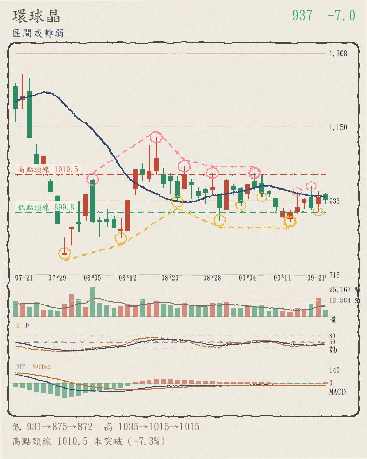
13:01 盤中 937（-0.74%），比加權指數弱 1.79 個百分點、跌破月線 947.85，離高點頸線 968 還差 3.2%，轉折還沒走出明顯方向。
- 月線位置：現價 937 在月線 947.85 之下（-1.1%）；5 日線 921.4 也在月線之下（短均在下）；月線向下
- 量能：以已過交易時間推估，今天成交量約是 20 日均量的 0.74 倍（量平），比 20 日均量少很多
- 關鍵價位：高點頸線 968 還沒突破，差 3.2%；前一交易日高點 960（低於 2.4%）；今天盤中高點 954（低於 1.8%）；今天盤中低點 925（高於 1.3%）
- 轉折結構：低點 931、875、872 與高點 1035、1015、1015 都沒有明顯遞增，屬於區間震盪或轉弱；還沒確認的轉折低點 09-14 872、09-18 901；還沒確認的轉折高點 09-15 959、09-17 977（圖上虛線小圈）
量平
↑ 回上方清單
智邦 2345 上市
1840 -15.0（-0.81%）
區間或轉弱 盤中成交值 49.99 億・全榜第 47 名（上市第 37 名）・相對大盤 -1.86
好條件 0/8：無
不好條件 5/8：跌破前低、今日下跌、相對大盤弱、在月線之下、月線下彎
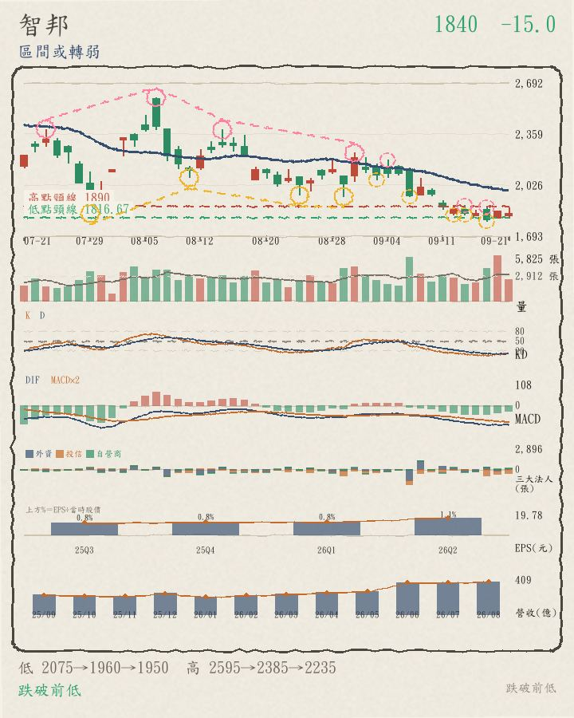
13:01 盤中 1840（-0.81%），比加權指數弱 1.86 個百分點、跌破月線 2003.5，離高點頸線 1890 還差 2.6%，轉折還沒走出明顯方向。
- 月線位置：現價 1840 在月線 2003.5 之下（-8.2%）；5 日線 1842 也在月線之下（短均在下）；月線向下
- 量能：以已過交易時間推估，今天成交量約是 20 日均量的 1.03 倍（量平），跟 20 日均量差不多
- 關鍵價位：已跌破前一個轉折低點；高點頸線 1890 還在現價上方 2.6%；前一交易日高點 1855（低於 0.8%）；今天盤中高點 1880（低於 2.1%）；今天盤中低點 1810（高於 1.7%）
- 轉折結構：低點 2075、1960、1950 與高點 2595、2385、2235 都沒有明顯遞增，屬於區間震盪或轉弱；還沒確認的轉折低點 09-15 1830、09-17 1790；還沒確認的轉折高點 09-15 1895、09-17 1885（圖上虛線小圈）
緯穎 6669 上市
2145 +5.0（+0.23%）
上升趨勢（底底高＋頭頭高） 盤中成交值 48.76 億・全榜第 48 名（上市第 38 名）・相對大盤 -0.82
好條件 3/8：月線向上、底底高、頭頭高
不好條件 2/8：相對大盤弱、在月線之下
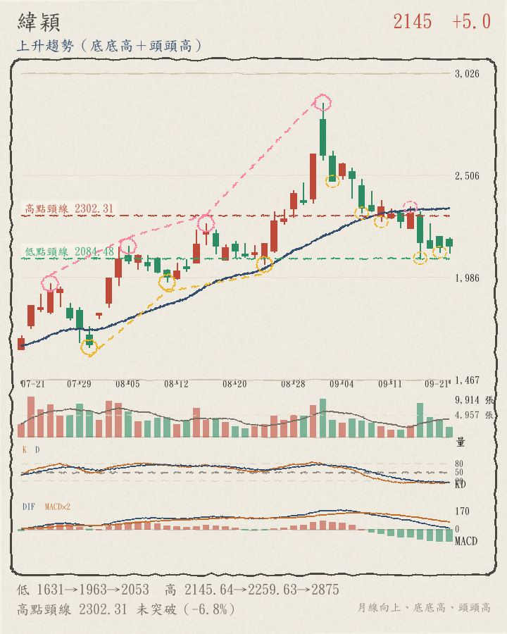
13:01 盤中 2145（+0.23%），比加權指數弱 0.82 個百分點、跌破月線 2336.16，離高點頸線 2302.31 還差 6.8%，轉折結構仍是底底高＋頭頭高。
- 月線位置：現價 2145 在月線 2336.16 之下（-8.2%）；5 日線 2205 也在月線之下（短均在下）；月線向上
- 量能：以已過交易時間推估，今天成交量約是 20 日均量的 0.60 倍（量縮），比 20 日均量少很多；上漲但量縮，量價背離
- 關鍵價位：高點頸線 2302.31 還沒突破，差 6.8%；前一交易日高點 2195（低於 2.3%）；今天盤中高點 2190（低於 2.1%）；今天盤中低點 2110（高於 1.7%）
- 轉折結構：低點 1631.02、1962.92、2053.44 一路墊高、高點 2145.64、2259.63、2875 也一路墊高，是底底高＋頭頭高；還沒確認的轉折低點 09-16 2085、09-18 2115；還沒確認的轉折高點 09-15 2345（圖上虛線小圈）
世芯-KY 3661 上市
3630 +90.0（+2.54%）
區間或轉弱 盤中成交值 48.35 億・全榜第 49 名（上市第 39 名）・相對大盤 +1.49
好條件 1/8：相對大盤強
不好條件 2/8：在月線之下、月線下彎
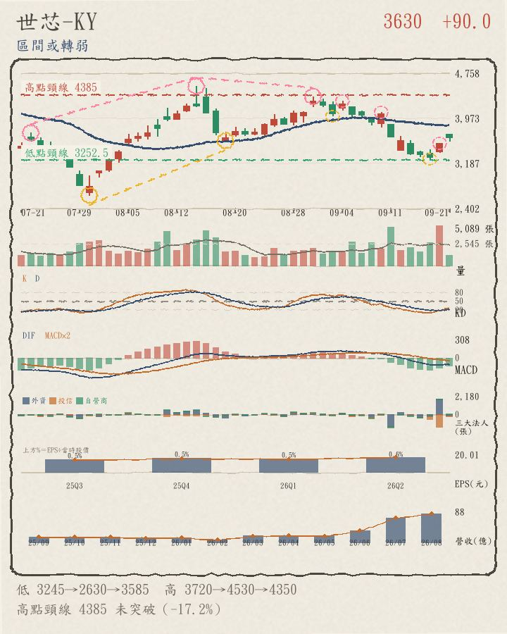
13:01 盤中 3630（+2.54%），比加權指數強 1.49 個百分點、跌破月線 3856，離高點頸線 4385 還差 17.2%，轉折還沒走出明顯方向。
- 月線位置：現價 3630 在月線 3856 之下（-5.9%）；5 日線 3425 也在月線之下（短均在下）；月線向下
- 量能：以已過交易時間推估，今天成交量約是 20 日均量的 0.72 倍（量平），比 20 日均量少很多；上漲但量縮，量價背離
- 關鍵價位：高點頸線 4385 還沒突破，差 17.2%；前一交易日高點 3540（高於 2.5%）；今天盤中高點 3700（低於 1.9%）；今天盤中低點 3580（高於 1.4%）
- 轉折結構：低點 3245、2630、3585 與高點 3720、4530、4350 都沒有明顯遞增，屬於區間震盪或轉弱；還沒確認的轉折低點 09-03 4010、09-17 3260；還沒確認的轉折高點 09-10 4075、09-18 3540（圖上虛線小圈）
量平
↑ 回上方清單
旺矽 6223 上櫃
5495 -305.0（-5.26%）
區間或轉弱 盤中成交值 48.3 億・全榜第 50 名（上櫃第 11 名）・相對大盤 -6.31
好條件 2/8：站上月線、月線向上
不好條件 3/8：今日下跌、相對大盤弱、跌破昨日低點
13:01 盤中 5495（-5.26%），比加權指數弱 6.31 個百分點、站上月線 5421.5，離高點頸線 5750 還差 4.4%，轉折還沒走出明顯方向。
- 月線位置：現價 5495 在月線 5421.5 之上（+1.4%）；5 日線 5587 也在月線之上（短均在上）；月線向上
- 量能：以已過交易時間推估，今天成交量約是 20 日均量的 0.97 倍（量平），跟 20 日均量差不多
- 關鍵價位：高點頸線 5750 還沒突破，差 4.4%；前一交易日高點 5840（低於 5.9%）；今天盤中高點 5850（低於 6.1%）；今天盤中低點 5410（高於 1.6%）
- 轉折結構：低點 5000、4730、5365 與高點 6815、5585、6060 都沒有明顯遞增，屬於區間震盪或轉弱；還沒確認的轉折低點 09-11 5365、09-17 5485；還沒確認的轉折高點 09-15 5800、09-17 5860（圖上虛線小圈）
健策 3653 上市
5760 +235.0（+4.25%）
底部墊高、未過前高 盤中成交值 46.6 億・全榜第 51 名（上市第 40 名）・相對大盤 +3.20
好條件 5/8：站上月線、月線向上、底底高、相對大盤強、突破頸線
不好條件 0/8：無
13:01 盤中 5760（+4.25%），比加權指數強 3.20 個百分點、站上月線 5621，已突破高點頸線 5635，底部還在墊高（但高點沒同步創高）。
- 月線位置：現價 5760 在月線 5621 之上（+2.5%）；5 日線 5450 也在月線之下（短均在下）；月線向上
- 量能：以已過交易時間推估，今天成交量約是 20 日均量的 0.76 倍（量平），比 20 日均量少很多；上漲但量縮，量價背離
- 關鍵價位：高點頸線 5635 已站上；前一交易日高點 5650（高於 1.9%）；今天盤中高點 5890（低於 2.2%）；今天盤中低點 5700（高於 1.1%）
- 轉折結構：低點 3895、4910、5480 墊高（底底高），但高點 6095、6000、5920 沒有同步創高；還沒確認的轉折低點 09-08 5480、09-16 5210；還沒確認的轉折高點 09-14 5920、09-18 5650（圖上虛線小圈）
奇鋐 3017 上市
3415 -15.0（-0.44%）
高點墊高、底部不穩 盤中成交值 45.66 億・全榜第 52 名（上市第 41 名）・相對大盤 -1.49
好條件 4/8：站上月線、月線向上、頭頭高、突破頸線
不好條件 2/8：今日下跌、相對大盤弱
13:01 盤中 3415（-0.44%），比加權指數弱 1.49 個百分點、站上月線 3290.25，已突破高點頸線 3385，高點還在墊高（但底部沒同步墊高）。
- 月線位置：現價 3415 在月線 3290.25 之上（+3.8%）；5 日線 3243 也在月線之下（短均在下）；月線向上
- 量能：以已過交易時間推估，今天成交量約是 20 日均量的 0.47 倍（量縮），比 20 日均量少很多
- 關鍵價位：高點頸線 3385 已站上；前一交易日高點 3450（低於 1.0%）；今天盤中高點 3495（低於 2.3%）；今天盤中低點 3365（高於 1.5%）
- 轉折結構：高點 2965、3320、3595 墊高（頭頭高），但低點 2740、3245、3100 沒有同步墊高；還沒確認的轉折低點 09-15 3100、09-16 3100；還沒確認的轉折高點 09-10 3470、09-18 3450（圖上虛線小圈）
合晶 6182 上櫃
115 -1.0（-0.86%）
區間或轉弱 盤中成交值 44.76 億・全榜第 53 名（上櫃第 12 名）・相對大盤 -1.91
好條件 1/8：站上月線
不好條件 3/8：今日下跌、相對大盤弱、月線下彎
13:01 盤中 115（-0.86%），比加權指數弱 1.91 個百分點、站上月線 109.15，離高點頸線 118 還差 2.5%，轉折還沒走出明顯方向。
- 月線位置：現價 115 在月線 109.15 之上（+5.4%）；5 日線 109.5 也在月線之上（短均在上）；月線向下
- 量能：以已過交易時間推估，今天成交量約是 20 日均量的 0.95 倍（量平），跟 20 日均量差不多
- 關鍵價位：高點頸線 118 還沒突破，差 2.5%；前一交易日高點 116.5（低於 1.3%）；今天盤中高點 119（低於 3.4%）；今天盤中低點 113.5（高於 1.3%）
- 轉折結構：低點 103.5、104、100 與高點 131、117.5、119 都沒有明顯遞增，屬於區間震盪或轉弱；還沒確認的轉折低點 09-08 109、09-14 100；還沒確認的轉折高點 09-08 119、09-17 117.5（圖上虛線小圈）
中砂 1560 上市
914 +18.0（+2.01%）
高點墊高、底部不穩 盤中成交值 42.51 億・全榜第 54 名（上市第 42 名）・相對大盤 +0.96
好條件 7/8：站上月線、月線向上、頭頭高、突破頸線、相對大盤強、攻擊量（量增＋上漲）、守住今日高檔（距今日高點 1% 內）
不好條件 0/8：無
13:01 盤中 914（+2.01%），比加權指數強 0.96 個百分點、站上月線 730.05，已突破高點頸線 742.25，高點還在墊高（但底部沒同步墊高）。
- 月線位置：現價 914 在月線 730.05 之上（+25.2%）；5 日線 788 也在月線之上（短均在上）；月線向上
- 量能：以已過交易時間推估，今天成交量約是 20 日均量的 4.37 倍（爆量），比 20 日均量大不少；上漲又量增，量價配合
- 關鍵價位：高點頸線 742.25 已站上；前一交易日高點 896（高於 2.0%）；今天盤中高點 916（低於 0.2%）；今天盤中低點 861（高於 6.2%）
- 轉折結構：高點 749、748、794 墊高（頭頭高），但低點 662、656、663 沒有同步墊高；還沒確認的轉折低點 09-04 683、09-15 735；還沒確認的轉折高點 09-11 794、09-18 896（圖上虛線小圈）
華通 2313 上市
223 -5.5（-2.41%）
底部墊高、未過前高 盤中成交值 40.93 億・全榜第 55 名（上市第 43 名）・相對大盤 -3.46
好條件 2/8：月線向上、底底高
不好條件 3/8：今日下跌、相對大盤弱、在月線之下
13:01 盤中 223（-2.41%），比加權指數弱 3.46 個百分點、跌破月線 231.475，離高點頸線 259 還差 13.9%，底部還在墊高（但高點沒同步創高）。
- 月線位置：現價 223 在月線 231.475 之下（-3.7%）；5 日線 222.3 也在月線之下（短均在下）；月線向上
- 量能：以已過交易時間推估，今天成交量約是 20 日均量的 0.62 倍（量縮），比 20 日均量少很多
- 關鍵價位：高點頸線 259 還沒突破，差 13.9%；前一交易日高點 228.5（低於 2.4%）；今天盤中高點 228.5（低於 2.4%）；今天盤中低點 219（高於 1.8%）
- 轉折結構：低點 204、205.5、213 墊高（底底高），但高點 222、260、258 沒有同步創高；還沒確認的轉折低點 09-14 213、09-16 216；還沒確認的轉折高點 09-07 258、09-17 235（圖上虛線小圈）
聯鈞 3450 上市
547 +9.0（+1.67%）
上升趨勢（底底高＋頭頭高） 盤中成交值 40.23 億・全榜第 56 名（上市第 44 名）・相對大盤 +0.62
好條件 4/8：底底高、頭頭高、突破頸線、相對大盤強
不好條件 2/8：在月線之下、月線下彎
13:01 盤中 547（+1.67%），比加權指數強 0.62 個百分點、跌破月線 555.325，已突破高點頸線 531，轉折結構仍是底底高＋頭頭高。
- 月線位置：現價 547 在月線 555.325 之下（-1.5%）；5 日線 521.1 也在月線之下（短均在下）；月線向下
- 量能：以已過交易時間推估，今天成交量約是 20 日均量的 0.85 倍（量平），比 20 日均量少一些；上漲但量縮，量價背離
- 關鍵價位：高點頸線 531 已站上；前一交易日高點 565（低於 3.2%）；今天盤中高點 554（低於 1.3%）；今天盤中低點 536（高於 2.1%）
- 轉折結構：低點 330、483、489 一路墊高、高點 527、600、653 也一路墊高，是底底高＋頭頭高；還沒確認的轉折低點 09-09 510、09-14 489；還沒確認的轉折高點 09-14 535、09-18 565（圖上虛線小圈）
精測 6510 上櫃
3525 +5.0（+0.14%）
高點墊高、底部不穩 盤中成交值 39.37 億・全榜第 57 名（上櫃第 13 名）・相對大盤 -0.91
好條件 4/8：站上月線、月線向上、頭頭高、攻擊量（量增＋上漲）
不好條件 1/8：相對大盤弱
13:01 盤中 3525（+0.14%），比加權指數弱 0.91 個百分點、站上月線 3195.25，離高點頸線 3552.5 還差 0.8%，高點還在墊高（但底部沒同步墊高）。
- 月線位置：現價 3525 在月線 3195.25 之上（+10.3%）；5 日線 3316 也在月線之上（短均在上）；月線向上
- 量能：以已過交易時間推估，今天成交量約是 20 日均量的 1.40 倍（量增），比 20 日均量大不少；上漲又量增，量價配合
- 關鍵價位：高點頸線 3552.5 還沒突破，差 0.8%；前一交易日高點 3520（高於 0.1%）；今天盤中高點 3680（低於 4.2%）；今天盤中低點 3365（高於 4.8%）
- 轉折結構：高點 2975、3100、3935 墊高（頭頭高），但低點 2400、2235、2570 沒有同步墊高；還沒確認的轉折低點 09-03 3235、09-17 3165；還沒確認的轉折高點 09-09 3935、09-18 3520（圖上虛線小圈）
光寶科 2301 上市
288 +6.0（+2.13%）
上升趨勢（底底高＋頭頭高） 盤中成交值 39.36 億・全榜第 58 名（上市第 45 名）・相對大盤 +1.08
好條件 5/8：月線向上、底底高、頭頭高、突破頸線、相對大盤強
不好條件 2/8：跌破前低、在月線之下
13:01 盤中 288（+2.13%），比加權指數強 1.08 個百分點、跌破月線 293.75，已突破高點頸線 287，轉折結構仍是底底高＋頭頭高。
- 月線位置：現價 288 在月線 293.75 之下（-2.0%）；5 日線 277.7 也在月線之下（短均在下）；月線向上
- 量能：以已過交易時間推估，今天成交量約是 20 日均量的 0.54 倍（量縮），比 20 日均量少很多；上漲但量縮，量價背離
- 關鍵價位：高點頸線 287 已站上；前一交易日高點 288.5（低於 0.2%）；今天盤中高點 294（低於 2.0%）；今天盤中低點 281.5（高於 2.3%）
- 轉折結構：低點 176.5、251、296.5 一路墊高、高點 229、286.5、328 也一路墊高，是底底高＋頭頭高；還沒確認的轉折低點 09-14 272、09-16 271；還沒確認的轉折高點 09-15 286、09-18 288.5（圖上虛線小圈）
技嘉 2376 上市
367.5 +11.5（+3.23%）
區間或轉弱 盤中成交值 38.76 億・全榜第 59 名（上市第 46 名）・相對大盤 +2.18
好條件 4/8：站上月線、月線向上、相對大盤強、攻擊量（量增＋上漲）
不好條件 0/8：無
13:01 盤中 367.5（+3.23%），比加權指數強 2.18 個百分點、站上月線 352.175，離高點頸線 369.17 還差 0.5%，轉折還沒走出明顯方向。
- 月線位置：現價 367.5 在月線 352.175 之上（+4.3%）；5 日線 349.6 也在月線之下（短均在下）；月線向上
- 量能：以已過交易時間推估，今天成交量約是 20 日均量的 2.57 倍（爆量），比 20 日均量大不少；上漲又量增，量價配合
- 關鍵價位：高點頸線 369.17 還沒突破，差 0.5%；前一交易日高點 367.5（高於 0.0%）；今天盤中高點 376（低於 2.3%）；今天盤中低點 355（高於 3.5%）
- 轉折結構：低點 317.5、312、335.5 與高點 358、402、371 都沒有明顯遞增，屬於區間震盪或轉弱；還沒確認的轉折低點 09-11 342.5、09-16 341；還沒確認的轉折高點 09-07 371、09-18 367.5（圖上虛線小圈）
光頡 3624 上櫃
134 +8.0（+6.35%）
高點墊高、底部不穩 盤中成交值 37.77 億・全榜第 60 名（上櫃第 14 名）・相對大盤 +5.30
好條件 6/8：站上月線、月線向上、頭頭高、突破頸線、相對大盤強、攻擊量（量增＋上漲）
不好條件 0/8：無
13:01 盤中 134（+6.35%），比加權指數強 5.30 個百分點、站上月線 102.125，已突破高點頸線 129.75，高點還在墊高（但底部沒同步墊高）。
- 月線位置：現價 134 在月線 102.125 之上（+31.2%）；5 日線 122.9 也在月線之上（短均在上）；月線向上
- 量能：以已過交易時間推估，今天成交量約是 20 日均量的 1.86 倍（爆量），比 20 日均量大不少；上漲又量增，量價配合
- 關鍵價位：高點頸線 129.75 已站上；前一交易日高點 126.5（高於 5.9%）；今天盤中高點 138（低於 2.9%）；今天盤中低點 129（高於 3.9%）
- 轉折結構：高點 163、99.4、98.9 墊高（頭頭高），但低點 82.5、81.8、84.8 沒有同步墊高；還沒確認的轉折低點 09-03 84.8、09-17 115；還沒確認的轉折高點 09-15 129.5、09-17 130（圖上虛線小圈）
精材 3374 上櫃
442.5 -2.0（-0.45%）
高點墊高、底部不穩 盤中成交值 36.87 億・全榜第 61 名（上櫃第 15 名）・相對大盤 -1.50
好條件 4/8：站上月線、月線向上、頭頭高、突破頸線
不好條件 2/8：今日下跌、相對大盤弱
13:01 盤中 442.5（-0.45%），比加權指數弱 1.50 個百分點、站上月線 414.375，已突破高點頸線 438，高點還在墊高（但底部沒同步墊高）。
- 月線位置：現價 442.5 在月線 414.375 之上（+6.8%）；5 日線 427.1 也在月線之上（短均在上）；月線向上
- 量能：以已過交易時間推估，今天成交量約是 20 日均量的 0.73 倍（量平），比 20 日均量少很多
- 關鍵價位：高點頸線 438 已站上；前一交易日高點 444.5（低於 0.4%）；今天盤中高點 456（低於 3.0%）；今天盤中低點 432（高於 2.4%）
- 轉折結構：高點 328.5、431、496 墊高（頭頭高），但低點 288、289、407 沒有同步墊高；還沒確認的轉折低點 09-15 407、09-18 418.5；還沒確認的轉折高點 09-11 496、09-17 445（圖上虛線小圈）
環宇-KY 4991 上櫃
493.5 +19.5（+4.11%）
區間或轉弱 盤中成交值 36.21 億・全榜第 62 名（上櫃第 16 名）・相對大盤 +3.06
好條件 3/8：站上月線、相對大盤強、攻擊量（量增＋上漲）
不好條件 1/8：月線下彎
13:01 盤中 493.5（+4.11%），比加權指數強 3.06 個百分點、站上月線 482.025，離高點頸線 520 還差 5.1%，轉折還沒走出明顯方向。
- 月線位置：現價 493.5 在月線 482.025 之上（+2.4%）；5 日線 439.2 也在月線之下（短均在下）；月線向下
- 量能：以已過交易時間推估，今天成交量約是 20 日均量的 1.74 倍（爆量），比 20 日均量大不少；上漲又量增，量價配合
- 關鍵價位：高點頸線 520 還沒突破，差 5.1%；前一交易日高點 474（高於 4.1%）；今天盤中高點 508（低於 2.9%）；今天盤中低點 478（高於 3.2%）
- 轉折結構：低點 327.5、321、418.5 與高點 520、560、520 都沒有明顯遞增，屬於區間震盪或轉弱；還沒確認的轉折低點 09-08 467、09-16 417；還沒確認的轉折高點 09-09 520、09-18 474（圖上虛線小圈）
世紀* 5314 上櫃
29.8 -0.7（-2.13%）
高點墊高、底部不穩 盤中成交值 34.52 億・全榜第 63 名（上櫃第 17 名）・相對大盤 -3.18
好條件 2/8：月線向上、頭頭高
不好條件 5/8：跌破前低、今日下跌、相對大盤弱、在月線之下、量增下跌（出貨）
13:01 盤中 29.8（-2.13%），比加權指數弱 3.18 個百分點、跌破月線 35.095，高點還在墊高（但底部沒同步墊高）。
- 月線位置：現價 29.8 在月線 35.095 之下（-15.1%）；5 日線 32.24 也在月線之下（短均在下）；月線向上
- 量能：以已過交易時間推估，今天成交量約是 20 日均量的 10.46 倍（爆量），比 20 日均量大不少；下跌卻量增，量價背離
- 關鍵價位：前一交易日高點 30.5（低於 2.3%）；今天盤中高點 32.25（低於 7.6%）；今天盤中低點 29.35（高於 1.5%）
- 轉折結構：高點 18.0417、41.8、46.8 墊高（頭頭高），但低點 15.4197、11.3543、30.8 沒有同步墊高；還沒確認的轉折低點 09-03 30.85、09-17 27.75；還沒確認的轉折高點 09-10 46.8、09-18 30.5（圖上虛線小圈）
尖點 8021 上市
463 +3.0（+0.65%）
高點墊高、底部不穩 盤中成交值 32.64 億・全榜第 64 名（上市第 47 名）・相對大盤 -0.40
好條件 5/8：站上月線、月線向上、頭頭高、攻擊量（量增＋上漲）、突破頸線
不好條件 1/8：相對大盤弱
13:01 盤中 463（+0.65%），比加權指數弱 0.40 個百分點、站上月線 435，已突破高點頸線 457.2，高點還在墊高（但底部沒同步墊高）。
- 月線位置：現價 463 在月線 435 之上（+6.4%）；5 日線 444.8 也在月線之上（短均在上）；月線向上
- 量能：以已過交易時間推估，今天成交量約是 20 日均量的 1.18 倍（量增），比 20 日均量大不少；上漲又量增，量價配合
- 關鍵價位：高點頸線 457.2 已站上；前一交易日高點 476（低於 2.7%）；今天盤中高點 481（低於 3.7%）；今天盤中低點 457（高於 1.3%）
- 轉折結構：高點 452、465、462 墊高（頭頭高），但低點 373.5、413、410.5 沒有同步墊高；還沒確認的轉折低點 09-16 411.5、09-18 444；還沒確認的轉折高點 09-15 445、09-17 481（圖上虛線小圈）
信昌電 6173 上櫃
311.5 -2.5（-0.80%）
上升趨勢（底底高＋頭頭高） 盤中成交值 31.58 億・全榜第 65 名（上櫃第 18 名）・相對大盤 -1.85
好條件 4/8：站上月線、月線向上、底底高、頭頭高
不好條件 2/8：今日下跌、相對大盤弱
13:01 盤中 311.5（-0.80%），比加權指數弱 1.85 個百分點、站上月線 263.225，離高點頸線 323 還差 3.6%，轉折結構仍是底底高＋頭頭高。
- 月線位置：現價 311.5 在月線 263.225 之上（+18.3%）；5 日線 304.1 也在月線之上（短均在上）；月線向上
- 量能：以已過交易時間推估，今天成交量約是 20 日均量的 0.58 倍（量縮），比 20 日均量少很多
- 關鍵價位：高點頸線 323 還沒突破，差 3.6%；前一交易日高點 314（低於 0.8%）；今天盤中高點 318.5（低於 2.2%）；今天盤中低點 308（高於 1.1%）
- 轉折結構：低點 189.5、190.5、265.5 一路墊高、高點 178、230、270.5 也一路墊高，是底底高＋頭頭高；還沒確認的轉折低點 09-14 272.5、09-17 295；還沒確認的轉折高點 09-11 321、09-17 325（圖上虛線小圈）
緯創 3231 上市
186.5 +0.0（+0.00%）
底部墊高、未過前高 盤中成交值 31.45 億・全榜第 66 名（上市第 48 名）・相對大盤 -1.05
好條件 3/8：站上月線、月線向上、底底高
不好條件 1/8：相對大盤弱
13:01 盤中 186.5（+0.00%），比加權指數弱 1.05 個百分點、站上月線 184.4，離高點頸線 190.17 還差 1.9%，底部還在墊高（但高點沒同步創高）。
- 月線位置：現價 186.5 在月線 184.4 之上（+1.1%）；5 日線 183.9 也在月線之下（短均在下）；月線向上
- 量能：以已過交易時間推估，今天成交量約是 20 日均量的 0.37 倍（量縮），比 20 日均量少很多
- 關鍵價位：高點頸線 190.17 還沒突破，差 1.9%；前一交易日高點 190.5（低於 2.1%）；今天盤中高點 189.5（低於 1.6%）；今天盤中低點 186.5（高於 0.0%）
- 轉折結構：低點 172.5、174、179.5 墊高（底底高），但高點 206、188、200.5 沒有同步創高；還沒確認的轉折低點 09-14 179.5、09-16 181；還沒確認的轉折高點 09-10 192、09-18 190.5（圖上虛線小圈）
鴻海 2317 上市
250.5 +0.0（+0.00%）
區間或轉弱 盤中成交值 30.92 億・全榜第 67 名（上市第 49 名）・相對大盤 -1.05
好條件 3/8：站上月線、月線向上、守住今日高檔（距今日高點 1% 內）
不好條件 2/8：相對大盤弱、貼近今日低點（1% 內）
13:01 盤中 250.5（+0.00%），比加權指數弱 1.05 個百分點、站上月線 250.05，離高點頸線 255.1 還差 1.8%，轉折還沒走出明顯方向。
- 月線位置：現價 250.5 在月線 250.05 之上（+0.2%）；5 日線 248.8 也在月線之下（短均在下）；月線向上
- 量能：以已過交易時間推估，今天成交量約是 20 日均量的 0.48 倍（量縮），比 20 日均量少很多
- 關鍵價位：高點頸線 255.1 還沒突破，差 1.8%；前一交易日高點 253（低於 1.0%）；今天盤中高點 252（低於 0.6%）；今天盤中低點 249（高於 0.6%）
- 轉折結構：低點 242.5、238、243.5 與高點 256.5、256.5、259 都沒有明顯遞增，屬於區間震盪或轉弱；還沒確認的轉折低點 09-16 246、09-18 249；還沒確認的轉折高點 09-15 250、09-17 253.5（圖上虛線小圈）
順達 3211 上櫃
390 +22.0（+5.98%）
底部墊高、未過前高 盤中成交值 30.46 億・全榜第 68 名（上櫃第 19 名）・相對大盤 +4.93
好條件 5/8：站上月線、底底高、突破頸線、相對大盤強、攻擊量（量增＋上漲）
不好條件 1/8：月線下彎
13:01 盤中 390（+5.98%），比加權指數強 4.93 個百分點、站上月線 372.425，已突破高點頸線 386.67，底部還在墊高（但高點沒同步創高）。
- 月線位置：現價 390 在月線 372.425 之上（+4.7%）；5 日線 364.4 也在月線之下（短均在下）；月線向下
- 量能：以已過交易時間推估，今天成交量約是 20 日均量的 1.61 倍（爆量），比 20 日均量大不少；上漲又量增，量價配合
- 關鍵價位：高點頸線 386.67 已站上；前一交易日高點 369（高於 5.7%）；今天盤中高點 397（低於 1.8%）；今天盤中低點 370（高於 5.4%）
- 轉折結構：低點 278.5、315.5、349 墊高（底底高），但高點 398、419、414.5 沒有同步創高；還沒確認的轉折低點 09-14 349、09-17 360.5；還沒確認的轉折高點 09-14 372、09-17 379.5（圖上虛線小圈）
雍智科技 6683 上櫃
1690 +20.0（+1.20%）
高點墊高、底部不穩 盤中成交值 29.79 億・全榜第 69 名（上櫃第 20 名）・相對大盤 +0.15
好條件 6/8：站上月線、月線向上、頭頭高、突破頸線、相對大盤強、攻擊量（量增＋上漲）
不好條件 0/8：無
13:01 盤中 1690（+1.20%），比加權指數強 0.15 個百分點、站上月線 1346.75，已突破高點頸線 1483.75，高點還在墊高（但底部沒同步墊高）。
- 月線位置：現價 1690 在月線 1346.75 之上（+25.5%）；5 日線 1525 也在月線之上（短均在上）；月線向上
- 量能：以已過交易時間推估，今天成交量約是 20 日均量的 1.91 倍（爆量），比 20 日均量大不少；上漲又量增，量價配合
- 關鍵價位：高點頸線 1483.75 已站上；前一交易日高點 1670（高於 1.2%）；今天盤中高點 1740（低於 2.9%）；今天盤中低點 1625（高於 4.0%）
- 轉折結構：高點 1250、1460、1505 墊高（頭頭高），但低點 1050、1050、1235 沒有同步墊高；還沒確認的轉折低點 09-04 1335、09-14 1235；還沒確認的轉折高點 09-09 1505、09-17 1695（圖上虛線小圈）
晶豪科 3006 上市
284.5 -6.5（-2.23%）
高點墊高、底部不穩 盤中成交值 27.05 億・全榜第 70 名（上市第 50 名）・相對大盤 -3.28
好條件 3/8：站上月線、月線向上、頭頭高
不好條件 3/8：今日下跌、相對大盤弱、跌破昨日低點
13:01 盤中 284.5（-2.23%），比加權指數弱 3.28 個百分點、站上月線 283.325，離高點頸線 291 還差 2.2%，高點還在墊高（但底部沒同步墊高）。
- 月線位置：現價 284.5 在月線 283.325 之上（+0.4%）；5 日線 277 也在月線之下（短均在下）；月線向上
- 量能：以已過交易時間推估，今天成交量約是 20 日均量的 0.61 倍（量縮），比 20 日均量少很多
- 關鍵價位：高點頸線 291 還沒突破，差 2.2%；前一交易日高點 296.5（低於 4.0%）；今天盤中高點 293（低於 2.9%）；今天盤中低點 279（高於 2.0%）
- 轉折結構：高點 285.5、309.5、319 墊高（頭頭高），但低點 263.5、263.5、263 沒有同步墊高；還沒確認的轉折低點 09-04 263.5、09-15 263；還沒確認的轉折高點 09-10 319、09-18 296.5（圖上虛線小圈）